<!doctype html>
<html lang="en">
<head>
  <meta charset="utf-8">
  <meta name="viewport" content="width=device-width, initial-scale=1">
  <title>arxiv digest — 2026-07-24</title>
  <style>
:root {
  --bg: #ffffff;
  --fg: #1f2328;
  --muted: #59636e;
  --border: #d0d7de;
  --card: #f6f8fa;
  --link: #0969da;
}
body {
  max-width: 980px;
  margin: 0 auto;
  padding: 2rem 1rem 5rem;
  font-family: -apple-system, BlinkMacSystemFont, "Segoe UI", Helvetica, Arial, sans-serif;
  line-height: 1.55;
  color: var(--fg);
  background: var(--bg);
}
a { color: var(--link); }
img { max-width: 100%; height: auto; }
pre, code { background: var(--card); border-radius: 6px; }
pre { padding: 1rem; overflow-x: auto; }
blockquote { border-left: 4px solid var(--border); padding-left: 1rem; color: var(--muted); }
details { margin: 0.6rem 0; }
summary { cursor: pointer; font-weight: 600; }
.paper-figures-scroll {
  display: flex;
  gap: 1rem;
  overflow-x: auto;
  overscroll-behavior-x: contain;
  padding: 0.75rem 0.25rem 1rem;
  margin: 1rem 0 1.25rem;
  border-top: 1px solid var(--border);
  border-bottom: 1px solid var(--border);
  scroll-snap-type: x proximity;
}
.paper-figure-card {
  flex: 0 0 min(260px, 72vw);
  scroll-snap-align: start;
  background: var(--card);
  border: 1px solid var(--border);
  border-radius: 12px;
  padding: 0.55rem;
}
.paper-figure-card img {
  display: block;
  width: 100%;
  max-height: 240px;
  object-fit: contain;
  background: white;
  border-radius: 8px;
}
.paper-figure-caption {
  display: block;
  margin-top: 0.5rem;
  color: var(--muted);
  font-size: 0.85rem;
}
.figure-strip-hint {
  color: var(--muted);
  font-size: 0.9rem;
  margin-bottom: -0.3rem;
}
</style>
  <!-- MathJax: renders $...$ inline math and $$...$$ display math, plus
       \(...\) and \[...\]. Loaded from the official CDN; works offline
       once cached. Configured to skip code/pre blocks so arxiv IDs that
       look like dollar amounts don't get mangled. -->
  <script>
    window.MathJax = {
      tex: {
        inlineMath: [['$', '$'], ['\\(', '\\)']],
        displayMath: [['$$', '$$'], ['\\[', '\\]']],
        processEscapes: true,
        processEnvironments: true
      },
      options: {
        skipHtmlTags: ['script', 'noscript', 'style', 'textarea', 'pre', 'code'],
        ignoreHtmlClass: 'tex2jax_ignore',
        processHtmlClass: 'tex2jax_process'
      }
    };
  </script>
  <script id="MathJax-script" async
    src="https://cdn.jsdelivr.net/npm/mathjax@3/es5/tex-chtml.js"></script>
</head>
<body>
<header style="background-color: #333; color: white; padding: 15px; margin-bottom: 20px;">
  <h1 style="margin: 0; font-size: 24px;">
    <a href="https://ochelpan.github.io/arXiv_clean/" style="color: white; text-decoration: none;">Main</a>
  </h1>
</header>

<h1>Daily arXiv Report</h1>

<hr>
<p>
<a href="index.html">← Index</a>
 · <a href="papers_01.html">← Previous</a> · <a href="papers_03.html">Next →</a>
</p>
<hr>

<h2>Papers 21–40</h2>
<p><a id="paper-2607.19563"></a></p>
<h3 id="machine-learned-syndrome-post-selection-for-reliable-quantum-error-correction"><a href="http://arxiv.org/abs/2607.19563v1">Machine-learned syndrome post-selection for reliable quantum error correction</a></h3>
<p><strong>Authors:</strong> Tobias Haug, Askery Canabarro, Leandro Aolita<br>
<strong>Type:</strong> both · <strong>Category:</strong> quantum information and computing · <strong>PDF:</strong> <a href="https://arxiv.org/pdf/2607.19563v1">https://arxiv.org/pdf/2607.19563v1</a><br>
<strong>Analysis basis:</strong> full PDF text, analyzed in chunks
<strong>Topic relevance:</strong> 🔥 <code>QC/QI experiment</code> <strong>4/5</strong> · <code>methods for driven-dissipative</code> <strong>1/5</strong> · <code>quantum measurements</code> <strong>1/5</strong></p>
<div class="figure-strip-hint">↔ Scroll figures horizontally</div>
<div class="paper-figures-scroll">
<figure class="paper-figure-card">
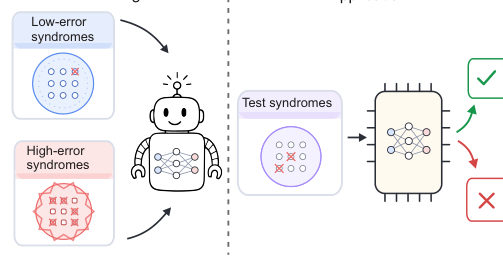
<figcaption class="paper-figure-caption"><b>Fig 1.</b> FIG. 1. Machine-learning post-selection via syndrome data. The supervised machine-learning model learns from an ensemble of syndromes with high- and low-error events. After training, the model is applied on new syndromes to decide which runs to actively correct errors on and which ones to discard.</figcaption>
</figure>
<figure class="paper-figure-card">
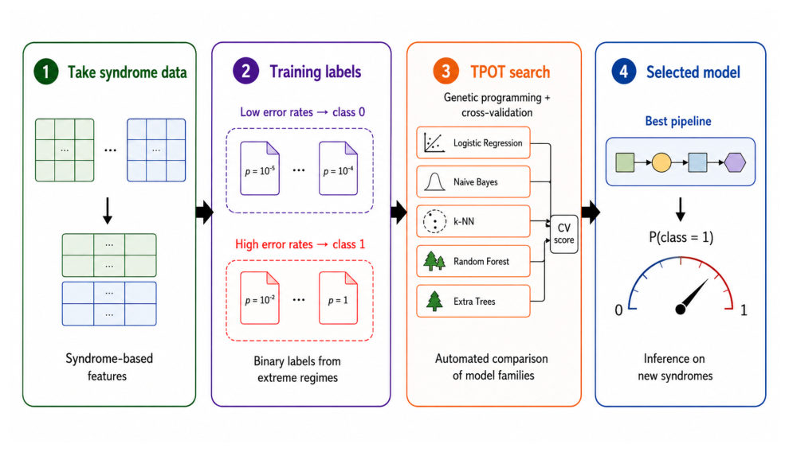
<figcaption class="paper-figure-caption"><b>Fig 2.</b> FIG. 2. Sketch of the automated machine-learning pipeline. Syndrome records sampled from low- and high-error-rate regimes are assigned class labels 0 and 1, respectively, and used to train a binary classifier through the TPOT automated model-selection procedure. Candidate pipelines are evaluated by cross-validation, and the best-performing pipeline is refitted on the training data. For each new syndrome s, the selected classifier returns the class-1 probability C(s) = Pr(y = 1 | s), which quantifies its similarity to the high-error-rate ensemble. This score is compared with a cutoff C0, where for C(s) &lt; C0 we accept the run, and else reject.</figcaption>
</figure>
<figure class="paper-figure-card">
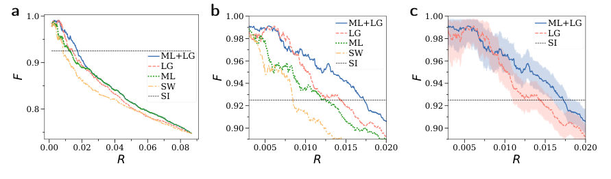
<figcaption class="paper-figure-caption"><b>Fig 3.</b> FIG. 3. Post-selection enhancement for QuEra’s magic-state distillation experiment. Experimental implementation of 5-1 magic state distillation protocol by Ref. [5] where 5 noisy single-qubit magic states are encoded into distance−5 color code blocks and then distilled into a less noisy magic state. The experimental protocol is described in Ref. [15] and the data from Ref. [40]. We show logical-error reduction by different post-selection strategies: based on the logical gap (LG), on machine-learning (ML), syndrome-weight (SW), and on machine-learning combined with logical gap (ML+LG). As a reference, the black dashed line is direct state-injection (SI) into the QEC code without distillation...</figcaption>
</figure>
<figure class="paper-figure-card">
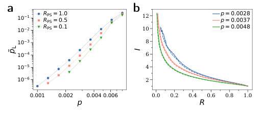
<figcaption class="paper-figure-caption"><b>Fig 4.</b> FIG. 4. Syndrome post-selection enhancement of the Gross-code. For the [[144, 12, 12]] bivariate-bicycle code, we train a classifier model on an efficiently generated dataset of syndromes drawn at physical error rates p = {0.001, 0.0013} (low-noise) or p = {0.0062, 0.008} (high-noise). We use the trained model to post-select syndromes at each p and then decode with BP-OSD. a) Logical error rate ˜pL after post- selection at post-selection rate R (defined in (2)) as a func- tion of p. As expected, the lower R is, the lower ˜pL is. b) Improvement factor I = pL/˜pL plotted against R for different p. Solid lines correspond to our post-selection via machine learning, while dashed lines to the...</figcaption>
</figure>
<figure class="paper-figure-card">
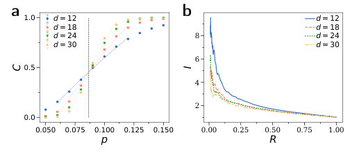
<figcaption class="paper-figure-caption"><b>Fig 5.</b> FIG. 5. Surface-code classifier threshold. a) The machine-learning predictor C against p, for different code dis- tances d. For all d, the curves cross at pML ≈0.0866(1) (ver- tical dashed line) and exhibit universal behavior (see SM A), reminiscent of a phase transition at a post-selection prob- ability threshold. Interestingly, pML differs from the usual physical-error threshold pth of the code (see main text). For the model’s training, we used syndrome data generated at physical error rates p = 0.05 and p = 0.06, for low noise, and p = 0.14 and p = 0.15, for high noise. Approximately 105</figcaption>
</figure>
</div>

<p><strong>Summary.</strong> This paper introduces a machine-learning technique to improve Quantum Error Correction by filtering out noisy runs based solely on syndrome measurements. By training a classifier to distinguish between low- and high-noise syndromes, the method provides a scalable, hardware-compatible post-selection score. This approach successfully enhances fidelity in both simulated codes and real neutral-atom quantum computing experiments.</p>
<p><strong>Why it may be interesting.</strong> It provides a practical, data-driven tool for improving quantum hardware performance that bypasses complex theoretical assumptions about decoding thresholds, making it highly relevant to experimental quantum information scientists.</p>
<details>
<summary>Detailed structure</summary>
<p><strong>Main problem.</strong> The goal is to enhance Quantum Error Correction (QEC) reliability by post-selecting runs likely to fail, circumventing the need for computationally expensive decoder-level information.</p>
<p><strong>Main result.</strong> A machine-learning approach using syndrome data alone can significantly reduce conditional logical error rates and improve output fidelity in both simulated codes and real experimental platforms.</p>
<p><strong>Method.</strong> The authors train a supervised binary classifier on syndrome measurements, distinguishing between syndromes generated under low-noise versus high-noise conditions. This classifier's output serves as a decoder-agnostic 'abort score' for run rejection.</p>
<p><strong>Model / system.</strong> The work applies to general QEC codes (e.g., Surface Code, Gross bivariate-bicycle code) and is validated using experimental data from magic-state distillation on a neutral-atom processor.</p>
<p><strong>Key observables.</strong> Conditional logical error rate ($  ilde{p}_L$), post-selection acceptance rate ($R$), and output fidelity ($F$).</p>
<p><strong>Important parameters / regimes.</strong> Physical error rates ($p$), code distance ($d$), and the machine-learning cutoff threshold ($C_0$ or $p_{ML}$).</p>
<p><strong>Assumptions / limitations.</strong> The method is explicitly designed to be decoder-agnostic, relying only on syndrome distributions rather than requiring knowledge of logical operators or specific decoding algorithms.</p>
<p><strong>Figures summary.</strong> Figures illustrate the training process using low/high-noise ensembles and show performance comparisons (e.g., fidelity vs. acceptance rate) where ML+LG outperforms LG alone in experimental settings.</p>
<p><strong>Paper structure.</strong> The paper introduces the problem, details the supervised classification methodology trained on synthetic noise ensembles, validates the approach across three distinct regimes (circuit simulation, code-capacity simulation, and real experiment), and concludes by demonstrating its scalability.</p>
</details>
<details>
<summary>Abstract</summary>
<p>Quantum error correction can be enhanced by post-selecting out runs that are likely to produce a logical failure, but the most accurate measures for that require costly decoder-level information. We introduce a practical, decoder-agnostic post-selection method that learns directly from syndrome data. The method trains a supervised classifier to distinguish between syndromes from low- and high-noise regimes, and then uses the classifier's output as an abort score for new runs, without requiring logical-error labels, correction operators, or code-specific likelihood calculations. We validate the approach in three complementary settings: circuit-level simulations of the Gross bivariate-bicycle code, code-capacity simulations of the surface code, and experimental logical magic-state distillation data from the QuEra neutral-atom processor. In the Gross and surface codes, learned syndrome post-selection reduces the conditional logical error rate at a fixed acceptance rate, with performance comparable to syndrome-weight filtering. For the surface code, the learned classifier reveals a post-selection transition distinct from the conventional decoding threshold. In the experimental data, the machine-learning score outperforms syndrome-weight post-selection and, when combined with logical-gap filtering, improves the output fidelity beyond using the logical gap alone. These results show that syndrome-only learning provides a scalable and hardware-compatible route to improving the reliability of quantum error correction.</p>
</details>
<p><sub><a href="#top">↑ back to top</a></sub></p>

<p><a id="paper-2607.20377"></a></p>
<h3 id="statevector-referenced-geometry-survival-of-a-four-qubit-zz-quantum-kernel-on-ibm-quantum-hardware-a-fixed-subset-diagnostic-across-three-execution-configurations"><a href="http://arxiv.org/abs/2607.20377v1">Statevector-Referenced Geometry Survival of a Four-Qubit ZZ Quantum Kernel on IBM Quantum Hardware: A Fixed-Subset Diagnostic Across Three Execution Configurations</a></h3>
<p><strong>Authors:</strong> Rostyslav Sipakov<br>
<strong>Type:</strong> experiment · <strong>Category:</strong> quantum information and computing · <strong>PDF:</strong> <a href="https://arxiv.org/pdf/2607.20377v1">https://arxiv.org/pdf/2607.20377v1</a><br>
<strong>Analysis basis:</strong> full PDF text, analyzed in chunks
<strong>Topic relevance:</strong> 🔥 <code>QC/QI experiment</code> <strong>4/5</strong> · <code>entanglement &amp; information structure</code> <strong>1/5</strong></p>
<div class="figure-strip-hint">↔ Scroll figures horizontally</div>
<div class="paper-figures-scroll">
<figure class="paper-figure-card">
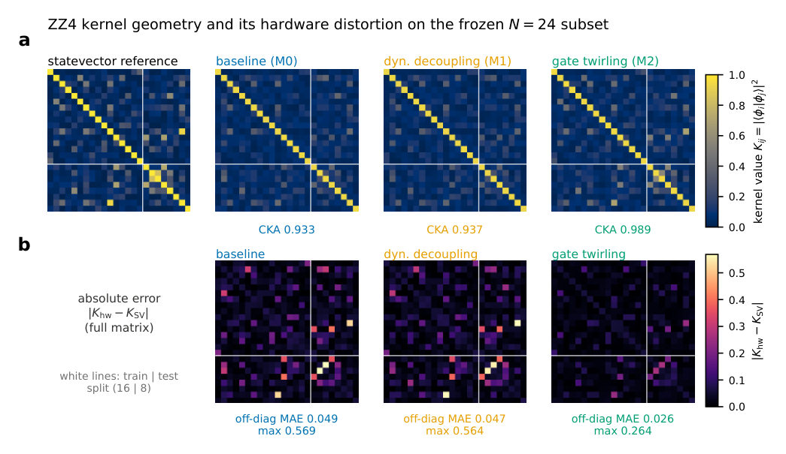
<figcaption class="paper-figure-caption"><b>Fig 1.</b> Figure 1. ZZ4 kernel geometry and its hardware distortion on the frozen 𝑁= 24 subset. (a) The intended statevector</figcaption>
</figure>
<figure class="paper-figure-card">
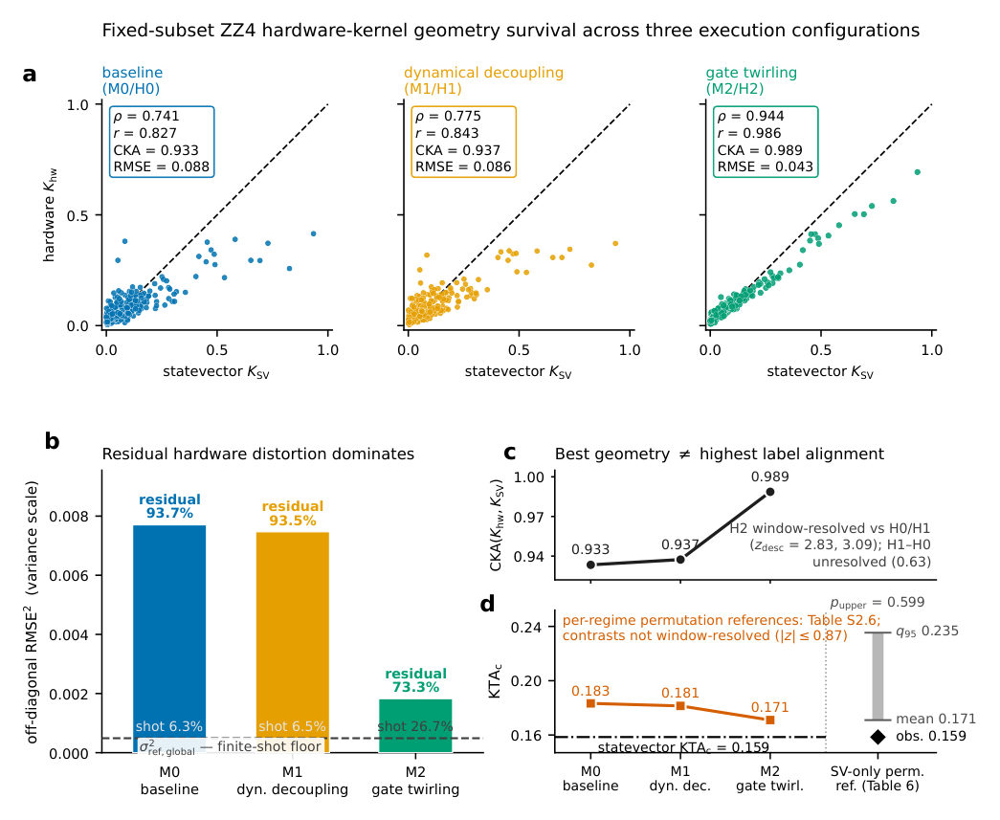
<figcaption class="paper-figure-caption"><b>Fig 2.</b> Figure 2. Fixed-subset ZZ4 hardware-kernel geometry survival across three execution configurations. (a) Off-diagonal kernel entries (276 unordered pairs) of each hardware reconstruction against the statevector reference; points below the identity line show overlaps compressed toward a common background; the compression is strongest for baseline (M0) and weakest for gate twirling (M2). (b) Off-diagonal mean-squared error relative to the configuration-independent global finite-shot reference 𝜎2 ref,global on the variance scale; the residual term dominates in every configuration (≥73%, conservative global reference). The split is a deterministic quadrature bookkeeping identity, not a physical...</figcaption>
</figure>
<figure class="paper-figure-card">
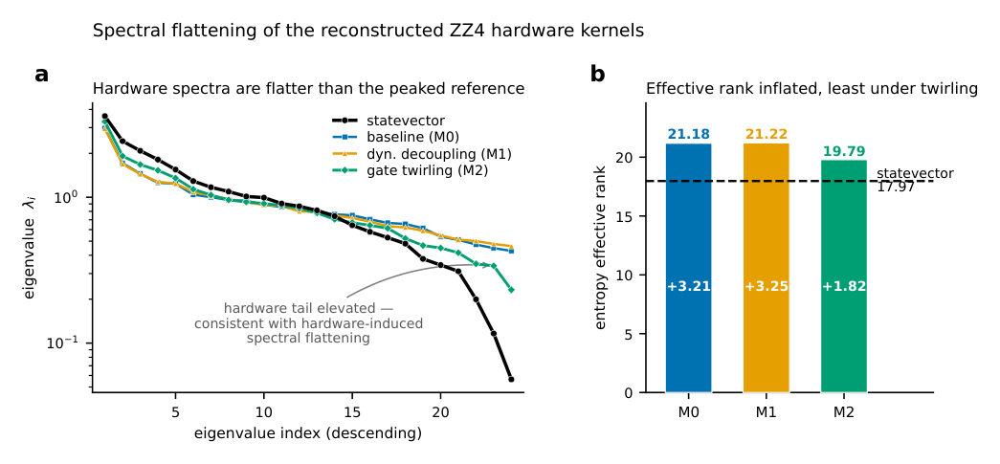
<figcaption class="paper-figure-caption"><b>Fig 3.</b> Figure 3. Spectral flattening of the reconstructed ZZ4 hardware kernels. (a) Sorted eigenvalue spectra; the noiseless reference spectrum is peaked with a rapidly decaying tail, whereas the hardware tails are elevated, consistent with hardware-induced spectral flattening (Section 3.7). (b) Entropy effective rank per configuration against the statevector reference (17.97); all hardware reconstructions are inflated, least under gate twirling (19.79 vs 21.18/21.22). Effective rank is computed from the uncentered spectrum. It is invariant to pure positive rescaling 𝐾↦𝑎𝐾but not, in general, to the additive 𝑏11⊤term, which the centered functionals (invariant under 𝐾↦𝑎𝐾+ 𝑏11⊤, 𝑎&gt; 0) annihilate, nor...</figcaption>
</figure>
</div>

<p><strong>Summary.</strong> This paper empirically tests how well the geometric structure encoded by a four-qubit ZZ quantum kernel survives execution on real quantum hardware using various error mitigation techniques. The authors find that while certain methods improve geometric preservation, this fidelity does not guarantee optimal performance relative to external task labels. Ultimately, it serves as a cautionary diagnostic study highlighting the distinct nature of implementation fidelity versus task relevance in near-term quantum computing.</p>
<p><strong>Why it may be interesting.</strong> It provides a rigorous, empirical test case for quantum machine learning pipelines, demonstrating the critical need to decouple hardware implementation fidelity from potential downstream predictive utility in noisy intermediate-scale quantum (NISQ) devices.</p>
<details>
<summary>Detailed structure</summary>
<p><strong>Main problem.</strong> The study aims to determine if the intended geometry of a quantum kernel survives execution when implemented on real, noisy quantum hardware.</p>
<p><strong>Main result.</strong> While gate twirling provided the most faithful reconstruction of the designed geometry, this best-performing configuration did not yield the highest alignment with external task labels, suggesting fidelity and task relevance are distinct properties.</p>
<p><strong>Method.</strong> The authors compared three error mitigation strategies (baseline, dynamical decoupling, gate twirling) by measuring kernel geometry preservation using multiple diagnostics on a fixed dataset.</p>
<p><strong>Model / system.</strong> The experiment uses a fixed four-qubit ZZ feature map kernel applied to $N=24$ indoor air-quality data points, executed on IBM Quantum hardware (ibm_fez).</p>
<p><strong>Key observables.</strong> Centered Kernel Alignment (CKA), centered kernel–target alignment (KTA), Spearman rank correlation, and effective rank.</p>
<p><strong>Important parameters / regimes.</strong> The analysis is restricted to a fixed subset of $N=24$ data points using 1024 shots per circuit.</p>
<p><strong>Assumptions / limitations.</strong> The results are purely descriptive diagnostics for single jobs on one backend; they do not constitute causal estimates of mitigation efficacy or quantum advantage.</p>
<p><strong>Figures summary.</strong> Not specified (Notes refer to supplementary figures/tables detailing diagnostic metrics).</p>
<p><strong>Paper structure.</strong> The paper diagnoses geometry survival by comparing the performance of three error mitigation techniques across various quantitative diagnostics, concluding that hardware distortion dominates and separating geometric fidelity from task-specific label alignment.</p>
</details>
<details>
<summary>Abstract</summary>
<p>Quantum-kernel methods encode a dataset's geometry in a Gram matrix, so learning claims on hardware kernels assume the intended geometry survives execution. We measure that survival for one frozen four-qubit ZZ feature-map kernel on $N=24$ real indoor air-quality windows, reconstructed on ibm_fez (1024 shots per circuit) under baseline, dynamical decoupling alone, and gate twirling alone, each a single non-interleaved job. Every configuration returned a complete, finite, positive-semidefinite Gram matrix and preserved the centered statevector geometry to a substantial but incomplete descriptive degree (full-matrix centered kernel alignment, CKA, 0.933-0.989). Gate twirling was most faithful on every reported geometry axis, with the only jackknife-resolved improvement over baseline (persisted Spearman, mean absolute error, and full-matrix CKA diagnostics); dynamical decoupling alone was not separated from baseline at the frozen-window scale. Residual hardware distortion, not finite sampling, dominates the discrepancy. Yet fidelity and label alignment were reversed: the most faithful configuration had the lowest centered kernel-target alignment, which sits at or below label-permutation references for statevector and hardware alike. We read the small hardware uplift as a normalization property of the non-affine distortion, not captured signal. These are descriptive results for single jobs on one backend, not causal mitigation-efficacy estimates; no quantum-advantage, hardware-classifier-superiority, or forecasting claim is made. Implementation fidelity and task relevance are distinct axes; hardware quantum machine-learning studies should report both.</p>
</details>
<p><sub><a href="#top">↑ back to top</a></sub></p>

<p><a id="paper-2607.20311"></a></p>
<h3 id="quantum-state-block-texture-and-its-quantification"><a href="http://arxiv.org/abs/2607.20311v1">Quantum-state block texture and its quantification</a></h3>
<p><strong>Authors:</strong> Yanjun Chu, Yuhang Xie, Chenyang Cui, Shao-Ming Fei<br>
<strong>Type:</strong> theory · <strong>Category:</strong> quantum information and computing · <strong>PDF:</strong> <a href="https://arxiv.org/pdf/2607.20311v1">https://arxiv.org/pdf/2607.20311v1</a><br>
<strong>Analysis basis:</strong> full PDF text, analyzed in chunks
<strong>Topic relevance:</strong> 🔥 <code>entanglement &amp; information structure</code> <strong>4/5</strong></p>
<div class="figure-strip-hint">↔ Scroll figures horizontally</div>
<div class="paper-figures-scroll">
<figure class="paper-figure-card">
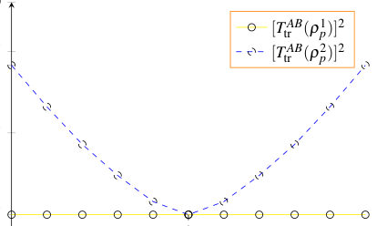
<figcaption class="paper-figure-caption"><b>Fig 1.</b> FIG. 1. [T AB tr (ρ2p)]2 and [T AB tr (ρ1p)]2 versus p.</figcaption>
</figure>
<figure class="paper-figure-card">
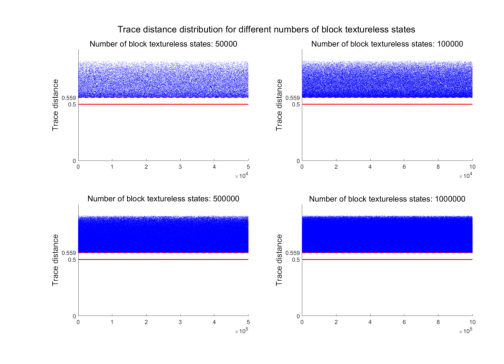
<figcaption class="paper-figure-caption"><b>Fig 2.</b> FIG. 2. The red solid line represents the trace-distance measure of QSBT T AB tr (ρAB) induced by the trace-distance measure of QST Ttr. The blue points in the four subplots represent the trace distance be- tween the state ρAB and the 5 × 104,105,5 × 105 and 106 randomly generated block textureless states, respectively.</figcaption>
</figure>
</div>

<p><strong>Summary.</strong> This paper introduces Quantum-State Block Texture (QSBT) as an advanced resource measure for bipartite quantum states. It pioneers several distinct mathematical frameworks—including geometric and trace distance approaches—to quantify this 'texture.' The results establish relationships between these measures, providing a deeper understanding of how different metrics characterize the non-local structure of quantum information.</p>
<p><strong>Why it may be interesting.</strong> This work provides a rigorous mathematical framework to quantify subtle structural features ('texture') in quantum states beyond standard measures like entanglement or coherence, which is crucial for designing protocols that exploit specific state properties.</p>
<details>
<summary>Detailed structure</summary>
<p><strong>Main problem.</strong> The paper generalizes Quantum-State Texture (QST) to Quantum-State Block Texture (QSBT) to provide operational measures for quantifying the quantum advantage embedded in bipartite quantum states.</p>
<p><strong>Main result.</strong> Multiple proposed QSBT measures, including geometric ($M_g$), trace distance ($M_{tr}$), fidelity ($M_f$), and relative entropy ($M_r$), are shown to be distinct but related, with $M_g$ serving as an upper bound for $M_{tr}$.</p>
<p><strong>Method.</strong> The authors develop structural frameworks by defining necessary conditions (T1-T4) for QSBT measures and deriving explicit formulas for various metrics based on minimizing distances/entropies relative to block textureless states.</p>
<p><strong>Model / system.</strong> The study focuses on bipartite quantum states $
ho_{AB}$ in a Hilbert space $H_A \otimes H_B$, comparing them against the set of 'block textureless' states, $\mathcal{T}_B$.</p>
<p><strong>Key observables.</strong> Quantum-State Block Texture (QSBT) measures: $M_g(
ho_{AB})$, $M_{tr}(
ho_{AB})$, $M_f(
ho_{AB})$, and $M_r(
ho_{AB})$.</p>
<p><strong>Important parameters / regimes.</strong> The structure of the bipartite system ($A \otimes B$) and the specific family of states used for numerical sampling.</p>
<p><strong>Assumptions / limitations.</strong> The theory builds upon existing resource theories (like coherence) and assumes the validity of structural conditions (T1-T4) for quantifying QSBT.</p>
<p><strong>Figures summary.</strong> Figures compare different measures, showing that $M_{tr}$ distinguishes state families differently from block state rugosity, and verifying relationships like $M_g \ge [M_{tr}]^2$.</p>
<p><strong>Paper structure.</strong> The paper progresses by generalizing QST to QSBT, proposing multiple quantitative measures ($M_g, M_{tr}, M_f, M_r$), establishing theoretical properties (e.g., Theorem III.1 for $Q_{AB}$), and finally comparing the distinct characteristics of these derived metrics.</p>
</details>
<details>
<summary>Abstract</summary>
<p>Quantum-state texture (QST) is an emerging quantum resource that has garnered increasing attention amid advances in quantum theory. In this work, we generalize the QST to quantum-state block texture (QSBT). This generalization provides profound operational interpretations for quantifying the advantages of quantum states in quantum information processing. We pioneer an alternative framework for characterizing and quantifying quantum-state block texture, and propose three types of block texture measures. By comparing these QSBT measures, we investigate their distinctions and interrelationships. We demonstrate that the geometric measure serves as an upper bound for the trace distance-based measure. For a specific family of quantum states, we evaluate the values of two trace distance-based measures. Then we sample four sets of data from this family of states, with each set comprising $5\times 10^4, 10^5, 5\times 10^5$ and $10^6 $ samples, respectively, and present the corresponding distributions. Our results reveal that the QSBT measures constructed via different approaches show distinct characteristics, indicating their potential roles in quantifying the block texture of quantum states.</p>
</details>
<p><sub><a href="#top">↑ back to top</a></sub></p>

<p><a id="paper-2607.19872"></a></p>
<h3 id="nonreciprocal-phonon-blockade-in-spin-quadratic-optomechanical-systems"><a href="http://arxiv.org/abs/2607.19872v1">Nonreciprocal phonon blockade in spin quadratic optomechanical systems</a></h3>
<p><strong>Authors:</strong> Yao Dong, Guo-Feng Zhang<br>
<strong>Type:</strong> theory · <strong>Category:</strong> other · <strong>PDF:</strong> <a href="https://arxiv.org/pdf/2607.19872v1">https://arxiv.org/pdf/2607.19872v1</a><br>
<strong>Analysis basis:</strong> full PDF text, analyzed in chunks
<strong>Topic relevance:</strong> <code>Keldysh / 2PI / non-Gaussian methods</code> <strong>3/5</strong> · <code>analog quantum simulation</code> <strong>3/5</strong> · <code>driven-dissipative phase transition</code> <strong>3/5</strong> · <code>methods for driven-dissipative</code> <strong>3/5</strong> · <code>Tavis-Cummings &amp; cavity-many-emitter</code> <strong>2/5</strong> · <code>correlated cavity matter</code> <strong>2/5</strong> · <code>non-equilibrium dynamics</code> <strong>2/5</strong> · <code>spintronics-quantum-optics interface</code> <strong>2/5</strong> · <code>correlated / nonlocal dissipation</code> <strong>1/5</strong> · <code>entanglement &amp; information structure</code> <strong>1/5</strong> · <code>exotic spin models in light-matter</code> <strong>1/5</strong> · <code>interference shaping light</code> <strong>1/5</strong> · <code>non-equilibrium universality</code> <strong>1/5</strong></p>
<div class="figure-strip-hint">↔ Scroll figures horizontally</div>
<div class="paper-figures-scroll">
<figure class="paper-figure-card">
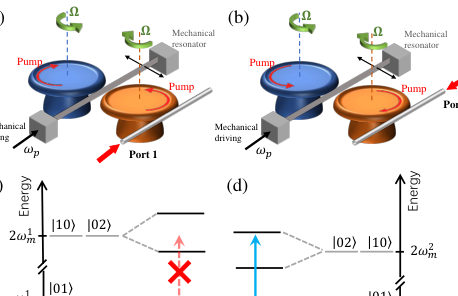
<figcaption class="paper-figure-caption"><b>Fig 1.</b> FIG. 1: (a), (b) Schematic of a spinning-resonator system for generating QOM coupling and nonreciprocal PB. Two WGM resonators rotate with the same angular velocity in opposite directions, coupled to a central mechanical oscillator. A co- herent pump field is input from port 1 [in (a)] or port 2 [in (b)], propagating against or along the rotation direction of the cav- ities. To excite phonons in this nonreciprocal phonon source, a weak driving field is applied to the mechanical mode. (c), (d) Eigenenergy-level diagrams for the configurations in (a) and (b). |n, m⟩represents a state with n photons and m phonons. The effective optomechanical interaction lifts the degeneracy of the eigenstates...</figcaption>
</figure>
<figure class="paper-figure-card">
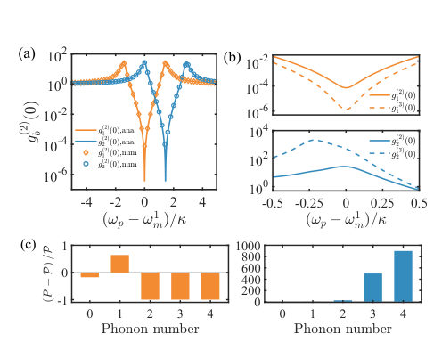
<figcaption class="paper-figure-caption"><b>Fig 2.</b> FIG. 2: (a) Phonon second-order correlation function versus mechanical driving ωp for inputs from port 1 [g(2) 1 (0)] and port 2 [g(2) 2 (0)]. Solid curves (symbols) correspond to analyt- ical (numerical) results. Parameters are set to the derived op- timal values, with nth = 0, γ = κ/100 and ε = κ/20. Here, ω1 m represents the effective mechanical frequency under the optimal parameters. (b) Second- and third-order correlation functions around the frequency ωp = ω1 m. (c) Deviation of the phonon distribution from a standard Poisson distribution with the same mean phonon number.</figcaption>
</figure>
<figure class="paper-figure-card">
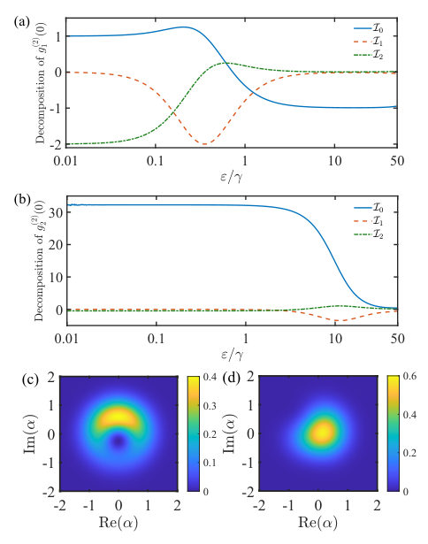
<figcaption class="paper-figure-caption"><b>Fig 3.</b> FIG. 3: (a), (b) Decomposition of the second-order correla- tion functions g(2) 1 (0) [in (a)] and g(2) 2 (0) [in (b)] as a func- tion of mechanical driving strength ε for ωp = ω1 m. (c), (d) Wigner representations Wb(Re(α), Im(α)) corresponding to input from port 1 with ε/γ = 1 [(c)] and input from port 2 with ε/γ = 20 [(d)].</figcaption>
</figure>
<figure class="paper-figure-card">
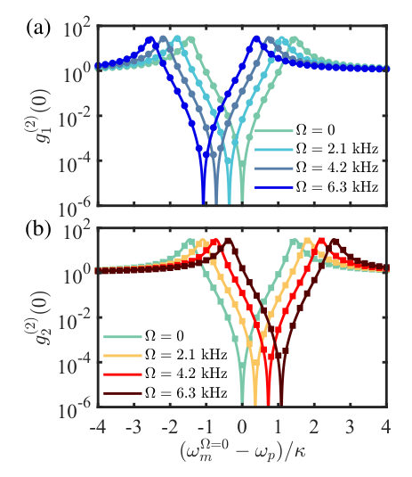
<figcaption class="paper-figure-caption"><b>Fig 4.</b> FIG. 4: Phonon second-order correlation functions g(2) 1 (0) (port 1 input) and g(2) 2 (0) (port 2 input) for different spin- ning angular velocities Ω. Other parameters are the same as in Fig. 2. ωΩ=0 m denotes the effective mechanical frequency when the resonator is static.</figcaption>
</figure>
<figure class="paper-figure-card">
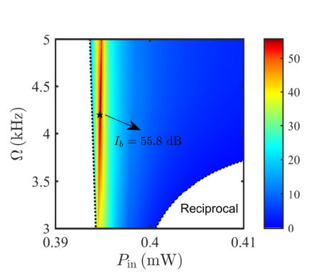
<figcaption class="paper-figure-caption"><b>Fig 5.</b> FIG. 5: Nonreciprocal isolation Ib as a function of pump power Pin and resonator angular velocity Ω. The remaining parameters are consistent with Fig. 2. The blank area indi- cates the reciprocal parameter region.</figcaption>
</figure>
</div>

<p><strong>Summary.</strong> The paper details a method to create nonreciprocal phonon blockade in an optomechanical system by exploiting the Sagnac-Fizeau effect in two coupled spinning resonators. This asymmetry causes one direction of light pumping to exhibit conventional phonon blockade, while the opposite direction facilitates phonon-induced tunneling. The work provides a pathway for directional quantum control devices.</p>
<p><strong>Why it may be interesting.</strong> This work is highly relevant as it combines several advanced topics: cavity QED (optomechanics), nonlinear quantum optics (blockade), and directional control (nonreciprocity) using a specific physical effect (Sagnac-Fizeau).</p>
<details>
<summary>Detailed structure</summary>
<p><strong>Main problem.</strong> The paper proposes a scheme to achieve nonreciprocal phonon blockade (PB) using a quadratic optomechanical (QOM) system.</p>
<p><strong>Main result.</strong> They demonstrate that the Sagnac-Fizeau effect creates direction-dependent mechanical frequency shifts, leading to conventional PB in one pump direction and facilitating two-phonon resonance/tunneling (PIT) in the opposite direction.</p>
<p><strong>Method.</strong> The analysis involves deriving an effective Hamiltonian for quantum fluctuations and analyzing the system's dynamics using the Lindblad master equation framework.</p>
<p><strong>Model / system.</strong> The physical platform is a QOM system comprising two spinning Whispering Gallery Mode (WGM) resonators coupled to a nanomechanical oscillator. The nonreciprocity stems from the Sagnac-Fizeau effect causing asymmetric detunings for counter-propagating pump fields.</p>
<p><strong>Key observables.</strong> Phonon second-order correlation function ($g^{(2)}_b(0)$), which quantifies blockade (antibunching) or bunching, and direction-dependent effective mechanical frequencies.</p>
<p><strong>Important parameters / regimes.</strong> The analysis relies on the resolved supermode regime ($J \gg \omega_m, \kappa$) and is sensitive to parameters governing the Sagnac-Fizeau shift ($\Delta F$).</p>
<p><strong>Assumptions / limitations.</strong> The primary assumptions include operating in the weak optomechanical coupling limit and using an analytical wave-function approximation consistent with master equation simulations.</p>
<p><strong>Figures summary.</strong> Figure 1 schematically illustrates the setup (two spinning WGM resonators coupled to a mechanical oscillator) and shows energy level diagrams detailing PB under single-phonon resonance and PIT under two-phonon resonance.</p>
<p><strong>Paper structure.</strong> The paper first introduces the physical system and the mechanism of nonreciprocity via the Sagnac-Fizeau effect. It then analyzes the resulting quantum statistics, quantifying the blockade contrast ratio, and finally extends the analysis to include thermal phonons to study extended nonreciprocal effects.</p>
</details>
<details>
<summary>Abstract</summary>
<p>We propose a scheme for achieving nonreciprocal phonon blockade in a quadratic optomechanical (QOM) system consisting of two spinning resonators near-field coupled to a nanomechanical oscillator. Due to the Sagnac-Fizeau effect, pump fields propagating in opposite directions experience distinct effective detunings,thereby leading to asymmetric intracavity intensities. Through the optical spring effect, this intensity imbalance gives rise to direction-dependent shifts in the effective mechanical frequency, providing the core mechanism for nonreciprocal phonon blockade. By judiciously setting parameters, single-phonon resonant excitation leads to conventional phonon blockade for one pump direction, whereas two-phonon resonance facilitates phononinduced tunneling (PIT) for the other. The pronounced nonreciprocity is quantified by a contrast ratio in the phonon second-order correlation function exceeding 55 dB. To elucidate the nonreciprocal statistics, the phonon blockade is further analyzed in terms of interference between the coherent component and squeezed fluctuations. Incorporating thermal phonons, we reveal an extended nonreciprocal thermal effect, where increasing thermal noise degrades antibunching toward Poissonian statistics in one direction, yet reverses the statistics from bunching to antibunching in the opposite direction. Our work provides a pathway toward nonreciprocal phonon devices and directional phonon switches, with potential applications in chiral networks and phononic information processing.</p>
</details>
<p><sub><a href="#top">↑ back to top</a></sub></p>

<p><a id="paper-2607.19984"></a></p>
<h3 id="a-framework-for-separating-dephasing-from-decoherence-in-matter-wave-bell-interferometers"><a href="http://arxiv.org/abs/2607.19984v1">A framework for separating dephasing from decoherence in matter-wave Bell interferometers</a></h3>
<p><strong>Authors:</strong> S. Kannan, Y. S. Athreya, X. T. Yan, S. S. Hodgman, A. G. Truscott<br>
<strong>Type:</strong> theory · <strong>Category:</strong> other · <strong>PDF:</strong> <a href="https://arxiv.org/pdf/2607.19984v1">https://arxiv.org/pdf/2607.19984v1</a><br>
<strong>Analysis basis:</strong> full PDF text, analyzed in chunks
<strong>Topic relevance:</strong> <code>correlated / nonlocal dissipation</code> <strong>3/5</strong> · <code>methods for driven-dissipative</code> <strong>3/5</strong> · <code>quantum measurements</code> <strong>3/5</strong> · <code>Keldysh / 2PI / non-Gaussian methods</code> <strong>2/5</strong> · <code>driven-dissipative phase transition</code> <strong>2/5</strong> · <code>entanglement &amp; information structure</code> <strong>2/5</strong> · <code>analog quantum simulation</code> <strong>1/5</strong> · <code>exotic spin models in light-matter</code> <strong>1/5</strong> · <code>interference shaping light</code> <strong>1/5</strong> · <code>measurement-induced transitions</code> <strong>1/5</strong> · <code>non-equilibrium dynamics</code> <strong>1/5</strong> · <code>non-equilibrium universality</code> <strong>1/5</strong> · <code>spintronics-quantum-optics interface</code> <strong>1/5</strong></p>
<div class="figure-strip-hint">↔ Scroll figures horizontally</div>
<div class="paper-figures-scroll">
<figure class="paper-figure-card">
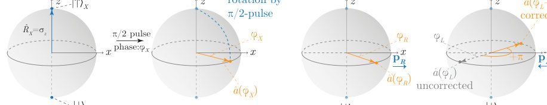
<figcaption class="paper-figure-caption"><b>Fig 1.</b> FIG. 1. (a) Schematic of the matter-wave Rarity-Tapster interferometer in the free-falling frame. Momentum-entangled pairs from the source, described by the Bell state |Ψ⟩≈ 1 √</figcaption>
</figure>
<figure class="paper-figure-card">
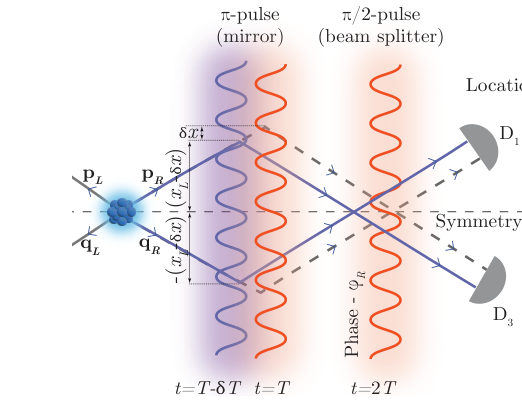
<figcaption class="paper-figure-caption"><b>Fig 2.</b> FIG. 2. Right arm of the matter-wave Rarity-Tapster interfer- ometer with a geometric path asymmetry δx. A timing shift −δT of the mirror pulse (blue wavy line) displaces the reflec- tion point by δx along ˆkeff relative to the symmetric position at t = T (red wavy line). The asymmetric path trajecto- ries (solid blue line) traverse a displacement of ±(xL −δx) from the symmetry axis, deviating from the ideal symmetric paths (dashed blue lines). The asymmetry introduces an ad- ditional momentum-dependent geometric phase 2pAδx/ℏon these atoms, which varies across the source momentum distri- bution f(pA) and produces geometric dephasing of the Bell- correlation amplitude. At δx = 0 this phase...</figcaption>
</figure>
<figure class="paper-figure-card">
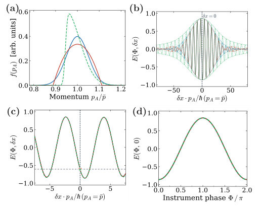
<figcaption class="paper-figure-caption"><b>Fig 3.</b> FIG. 3. Separation of geometric dephasing and Bell- amplitude reduction in a δx scan. (a) Representative source momentum distributions f(pA): Gaussian (blue), Thomas- Fermi (red), and asymmetric (green dashed). (b) Correspond- ing Bell-correlation interferograms E(Φ, δx) bounded by the geometric envelopes ⟨A⟩| eF(δx/ℏ)|, while (c) shows the region near δx = 0. Despite different fringe phases and envelope shapes away from zero, all three distributions yield the same Bell-correlation value at the ZPD point (Eq. (12)), confirm- ing the exact, source-distribution-independent extraction of ⟨A⟩. (d) Φ scan at fixed δx = 0: all three cases collapse onto the same sinusoid −⟨A⟩cos Φ, from which the...</figcaption>
</figure>
<figure class="paper-figure-card">
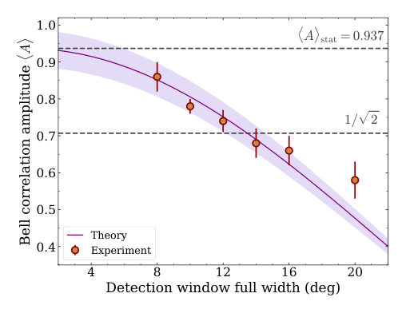
<figcaption class="paper-figure-caption"><b>Fig 4.</b> FIG. 4. Bell correlation amplitude ⟨A⟩as a function of the full width of the angular detection window (W). Filled circles are extracted from a sinusoidal fit to the experimental data in [25]. The solid curve shows the theoretical prediction from Eq. (24), with ∆ϕwindow = 1.5 × W/8, calibrated from the ±4◦window. The purple shaded region indicates the uncer- tainty arising from mode-occupancy. The theory reproduces the data well for windows up to 14◦, beyond which the linear approximation breaks down.</figcaption>
</figure>
<figure class="paper-figure-card">
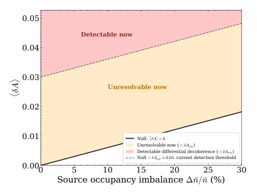
<figcaption class="paper-figure-caption"><b>Fig 5.</b> FIG. 5. Null-hypothesis benchmark for the dual-species Bell- amplitude comparison. The y-axis is the measured quantity ⟨δA⟩(Eq. (20)). The solid black curve gives the null predic- tion at which ⟨δA⟩= 0, accounting for finite source occu- pancy. A measured point cannot lie below the null curve; any vertical excess above it is the genuine differential deco- herence signal ⟨δA⟩. The orange band marks the region where ⟨δA⟩is present but below the current statistical uncertainty δAcur ≈0.03 (grey dashed line) and therefore unresolvable now; the red band marks the region where ⟨δA⟩is detectable with the current experiment.</figcaption>
</figure>
</div>

<p><strong>Summary.</strong> The paper develops a rigorous framework using SU(2) mapping to analyze matter-wave Bell interferometers, enabling the separation of geometric dephasing from true environmental decoherence. By analyzing measurements at zero path difference, the authors extract a source-independent measure of entanglement loss. This provides a concrete diagnostic tool for testing fundamental physics, such as mass-dependent decoherence mechanisms in quantum gases.</p>
<p><strong>Why it may be interesting.</strong> This work provides a powerful, generalizable theoretical tool for interpreting high-precision quantum measurements in cold atom systems. By rigorously separating noise sources, it elevates the field's ability to distinguish fundamental physics signals from technical artifacts, which is crucial for next-generation quantum sensors.</p>
<details>
<summary>Detailed structure</summary>
<p><strong>Main problem.</strong> The primary challenge is developing a robust theoretical framework to disentangle geometric dephasing, environmental decoherence, and technical measurement limitations when interpreting Bell correlations in matter-wave interferometers.</p>
<p><strong>Main result.</strong> The authors present a method using the zero path difference (ZPD) condition that yields a source-distribution-independent extraction of the true Bell correlation amplitude reduction. They show this framework can set concrete null benchmarks for detecting mass-dependent decoherence in dual-species systems.</p>
<p><strong>Method.</strong> The analysis employs the Schwinger SU(2) mapping to model momentum-mode occupation states as pseudospin operators, allowing systematic separation of unitary (geometric) and dissipative (decoherence) noise channels.</p>
<p><strong>Model / system.</strong> The physical system is a matter-wave Bell interferometer, specifically utilizing Rarity-Tapster geometries with momentum-entangled atom pairs. The theory models the measurement process using spin-$rac{1}{2}$ operators on a Bloch sphere.</p>
<p><strong>Key observables.</strong> Bell correlation amplitude ($\langle A 
angle$), which quantifies entanglement; the coincidence fringe measured at zero path difference (ZPD).</p>
<p><strong>Important parameters / regimes.</strong> Zero interferometer path difference ($\delta x = 0$); low-mode-occupancy limit ($ar{n} \ll 1$); mass difference between species in dual-species tests.</p>
<p><strong>Assumptions / limitations.</strong> The analysis assumes a low-mode-occupancy regime and relies on the symmetry properties of the interferometer geometry (e.g., RT symmetry) to cancel certain systematic errors like linear magnetic gradients.</p>
<p><strong>Figures summary.</strong> Figures illustrate the schematic setup of the Rarity-Tapster interferometer, the mapping from momentum modes to pseudospin states on a Bloch sphere, and how path asymmetry ($\delta x$) introduces measurable geometric phase shifts.</p>
<p><strong>Paper structure.</strong> The paper builds by first establishing the measurement formalism using SU(2) mapping, then deriving the dependence of the correlation function on path differences ($\delta x$), identifying ZPD as the key diagnostic point to eliminate geometric dephasing, and finally extending this framework to test for differential decoherence between atomic species.</p>
</details>
<details>
<summary>Abstract</summary>
<p>Matter-wave Bell interferometers provide a sensitive probe of mass-dependent decoherence in entangled quantum systems. The degree of entanglement is obtained from the Bell-correlation amplitude of this interferometer. For observing potential mass-dependent decoherence, a reliable interpretation of any observed reduction in the Bell correlation amplitude is required, which depends on three factors: geometric dephasing, environmental decoherence, and technical dilution from source and detection statistics. In this work, we present a framework based on the Schwinger SU(2) mapping to separate these contributions into local unitaries or dissipative channels. We show that by evaluating the Bell correlation at zero interferometer path difference, it is possible to extract a source-distribution-independent Bell correlation amplitude reduction. When this framework is extended to involve atoms of different mass, we show that the known differential decoherence channels are negligible at current sensitivity. This yields a concrete bound at which a dual-species Bell interferometer would begin to signal differential decoherence beyond the known systematics, opening the way for such systems to probe new physics, such as mass-dependent decoherence mechanisms.</p>
</details>
<p><sub><a href="#top">↑ back to top</a></sub></p>

<p><a id="paper-2607.19715"></a></p>
<h3 id="structured-light-mediated-hybrid-entanglement-between-photon-polarization-and-electronic-orbital-angular-momentum"><a href="http://arxiv.org/abs/2607.19715v1">Structured-light-mediated hybrid entanglement between photon polarization and electronic orbital angular momentum</a></h3>
<p><strong>Authors:</strong> Hiroaki Saito, Nobuhiko Yokoshi<br>
<strong>Type:</strong> theory · <strong>Category:</strong> quantum information and computing · <strong>PDF:</strong> <a href="https://arxiv.org/pdf/2607.19715v1">https://arxiv.org/pdf/2607.19715v1</a><br>
<strong>Analysis basis:</strong> full PDF text, analyzed in chunks
<strong>Topic relevance:</strong> <code>interference shaping light</code> <strong>3/5</strong> · <code>methods for driven-dissipative</code> <strong>3/5</strong> · <code>spintronics-quantum-optics interface</code> <strong>3/5</strong> · <code>entanglement &amp; information structure</code> <strong>2/5</strong> · <code>measurement-induced transitions</code> <strong>2/5</strong> · <code>quantum measurements</code> <strong>2/5</strong> · <code>Keldysh / 2PI / non-Gaussian methods</code> <strong>1/5</strong> · <code>analog quantum simulation</code> <strong>1/5</strong> · <code>correlated / nonlocal dissipation</code> <strong>1/5</strong> · <code>correlated cavity matter</code> <strong>1/5</strong> · <code>driven-dissipative phase transition</code> <strong>1/5</strong> · <code>exotic spin models in light-matter</code> <strong>1/5</strong> · <code>non-equilibrium dynamics</code> <strong>1/5</strong></p>
<div class="figure-strip-hint">↔ Scroll figures horizontally</div>
<div class="paper-figures-scroll">
<figure class="paper-figure-card">
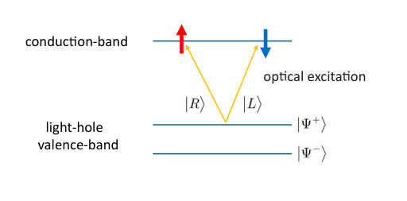
<figcaption class="paper-figure-caption"><b>Fig 1.</b> FIG. 1. Spin-excitation selection rules in a GaAs-based V- type three-level semiconductor structure. Left- and right- circularly polarized photons selectively excite different elec- tron spin states from one of the Zeeman-separated light-hole states, Ψ− or Ψ+ .</figcaption>
</figure>
<figure class="paper-figure-card">
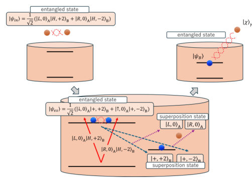
<figcaption class="paper-figure-caption"><b>Fig 2.</b> FIG. 2. Conceptual illustration of photon–electron hybrid- entanglement generation within a single semiconductor quan- tum disk. The labels A and B denote two optically addressed excitation channels in the same disk: a zero-OAM channel that recombines radiatively and a finite-OAM channel that stores the residual electronic OAM qubit. A spin–orbit struc- tured two-photon state is mapped to a two-excitation state through optical spin and OAM selection rules. Subsequent radiative recombination of the zero-OAM excitation emits a photon whose polarization is entangled with the residual elec- tronic OAM state.</figcaption>
</figure>
<figure class="paper-figure-card">
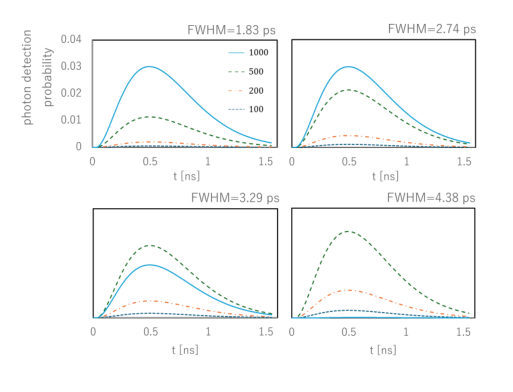
<figcaption class="paper-figure-caption"><b>Fig 3.</b> FIG. 3. Time evolution of the single-photon probability in the selected output filter mode for incident pulses with different full widths at half maximum (FWHM). Results are shown for g/Γrad =100 (blue dash-dot-dot), 200 (orange dash-dotted), 500 (green dash), and 1000 (light-blue solid). The plotted quantity is the single-photon occupation probability within the filter-mode description and should be interpreted together with the conditional fidelity. External collection losses, prop- agation losses, mode-matching losses, and detector inefficien- cies are not included.</figcaption>
</figure>
<figure class="paper-figure-card">

<figcaption class="paper-figure-caption"><b>Fig 4.</b> FIG. 4. Time evolution of the occupation probability of the selected two-excitation state |ψex⟩for different incident pulse widths at g/Γrad = 1000. The purple solid, green dashed, orange dash-dotted, and blue dotted lines correspond to FWHM=4.38 ps, 3.29 ps, 2.74 ps, and 1.83 ps, respectively. Inset: Enlarged view of the region where the dynamics change rapidly (t = 0.025–0.040 ns).</figcaption>
</figure>
<figure class="paper-figure-card">
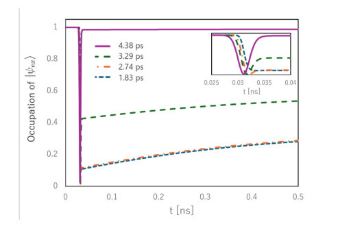
<figcaption class="paper-figure-caption"><b>Fig 5.</b> Figure 5 shows the heralded entanglement fidelity for different orbital relaxation rates. In the ideal case with- out orbital relaxation, Γorb = 0, the conditional state reaches nearly unit fidelity with the target entangled state in Eq. (33) once a photon is present in the se- lected output mode. As Γorb increases, relaxation from |+, +2⟩B or |+, −2⟩B to |+, 0⟩B before the heralding event removes the stored orbital information and de- grades the photon–electron OAM correlation. High- fidelity heralded hybrid entanglement requires the orbital relaxation time to be longer than the characteristic emis- sion and detection timescale. Once the photon has been detected, subsequent relaxation of the...</figcaption>
</figure>
</div>

<p><strong>Summary.</strong> The paper proposes an effective model demonstrating how structured light can mediate the creation of hybrid entanglement between emitted photon polarization and the orbital angular momentum stored in an electron within a semiconductor quantum disk. By analyzing the system dynamics via master equations, it shows that high fidelity is achievable provided electronic orbital relaxation is slow compared to the emission timescale.</p>
<p><strong>Why it may be interesting.</strong> This work directly addresses quantum information processing by proposing a solid-state platform for generating photonic qubits entangled with internal electronic degrees of freedom (OAM), which is highly relevant to quantum networking and memory interfaces.</p>
<details>
<summary>Detailed structure</summary>
<p><strong>Main problem.</strong> The primary goal is generating hybrid entanglement between photon polarization and electronic orbital angular momentum (OAM) using structured light in a semiconductor quantum disk.</p>
<p><strong>Main result.</strong> The proposed effective model demonstrates that high-fidelity entanglement can be achieved when the orbital relaxation time significantly exceeds the characteristic emission and detection timescales.</p>
<p><strong>Method.</strong> The analysis employs an open-system master equation approach to track the system's evolution, calculating heralded entanglement fidelity conditioned on single-photon detection.</p>
<p><strong>Model / system.</strong> The physical platform is a semiconductor quantum disk utilizing two excitation channels: one for radiative recombination (zero OAM) and another storing the electronic orbital qubit (finite OAM). The dynamics are modeled using an effective Hamiltonian and Lindblad dissipators.</p>
<p><strong>Key observables.</strong> Heralded entanglement fidelity ($F(t)$), single-photon probability ($P_{1ph}(t)$), and the conditional electronic state $  ilde{
ho}_{B\gamma}(t)$.</p>
<p><strong>Important parameters / regimes.</strong> Orbital relaxation rate ($\Gamma_{orb}$), radiative decay rate ($\Gamma_{rad}$), and the effective two-photon Rabi coupling ($g$).</p>
<p><strong>Assumptions / limitations.</strong> The model is a proof-of-principle effective description, neglecting microscopic details like biexciton binding or external losses. High fidelity requires $  au_{orb} &gt;  au_{    ext{emission/detection}}$.</p>
<p><strong>Figures summary.</strong> Figures illustrate the time evolution of single-photon probability and the heralded entanglement fidelity as a function of pulse width and orbital relaxation rate, respectively.</p>
<p><strong>Paper structure.</strong> The paper first establishes the physical mapping using structured light to create two excitation channels. It then models the subsequent radiative recombination dynamics using an open-system master equation approach to calculate the conditional state and entanglement fidelity.</p>
</details>
<details>
<summary>Abstract</summary>
<p>We propose a minimal quantum-optical scheme for generating hybrid entanglement between photon polarization and electronic orbital angular momentum in a semiconductor quantum disk. A spin--orbit structured two-photon state excites two channels in the same disk: a radiatively recombining zero-orbital-angular-momentum channel and a finite-orbital-angular-momentum channel that stores the electronic orbital qubit. An effective coherent mapping prepares a selected two-excitation state, followed by emission of a photon whose polarization is entangled with the residual electronic orbital state. A master-equation analysis shows that the heralded state conditioned on single-photon occupation of the selected output mode approaches the target entangled state in the ideal coherent limit. We also discuss orbital relaxation and perturbative validity conditions for branch-dependent Coulomb shifts, orbital-angular-momentum mixing, and finite-orbital-angular-momentum radiative leakage. This proof-of-principle effective model suggests a route toward structured-light-mediated photon--electron hybrid entanglement in semiconductor nanostructures.</p>
</details>
<p><sub><a href="#top">↑ back to top</a></sub></p>

<p><a id="paper-2607.20030"></a></p>
<h3 id="how-to-measure-loop-currents-in-scanning-tunneling-microscopy"><a href="http://arxiv.org/abs/2607.20030v1">How to measure loop currents in scanning tunneling microscopy</a></h3>
<p><strong>Authors:</strong> Victoire Morisseau, Luke C. Rhodes, Peter Wahl, Carolina A. Marques<br>
<strong>Type:</strong> theory · <strong>Category:</strong> strongly correlated electrons · <strong>PDF:</strong> <a href="https://arxiv.org/pdf/2607.20030v1">https://arxiv.org/pdf/2607.20030v1</a><br>
<strong>Analysis basis:</strong> full PDF text, analyzed in chunks
<strong>Topic relevance:</strong> <code>Keldysh / 2PI / non-Gaussian methods</code> <strong>3/5</strong> · <code>analog quantum simulation</code> <strong>3/5</strong> · <code>spintronics-quantum-optics interface</code> <strong>3/5</strong> · <code>Kondo &amp; dissipative impurity</code> <strong>2/5</strong> · <code>exotic spin models in light-matter</code> <strong>2/5</strong> · <code>methods for driven-dissipative</code> <strong>2/5</strong> · <code>correlated / nonlocal dissipation</code> <strong>1/5</strong> · <code>correlated cavity matter</code> <strong>1/5</strong> · <code>driven-dissipative phase transition</code> <strong>1/5</strong> · <code>entanglement &amp; information structure</code> <strong>1/5</strong> · <code>non-equilibrium dynamics</code> <strong>1/5</strong></p>
<div class="figure-strip-hint">↔ Scroll figures horizontally</div>
<div class="paper-figures-scroll">
<figure class="paper-figure-card">
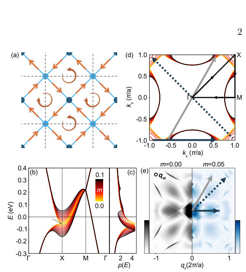
<figcaption class="paper-figure-caption"><b>Fig 1.</b> FIG. 1. Loop currents in a cuprate model. (a) Sketch of a tight-binding model on a square lattice with a two-atom unit cell and loop currents, representative of the cuprate model.[18] The loop currents enclose the one-atom unit cell and form a staggered order (orange arrows). The dark and light blue circles indicate the position of the two distinct Cu atoms in the unit cell. (b) Electronic band structure along the path Γ-X-M-Γ and (c) total density of states ρ(E) obtained for the model in (a) for loop currents corresponding to increasing magnetic moment, from m = 0.0 (yellow) to 0.1 (black). The black arrow in (b) points to the VHs that splits at the X-point with increasing loop current...</figcaption>
</figure>
<figure class="paper-figure-card">
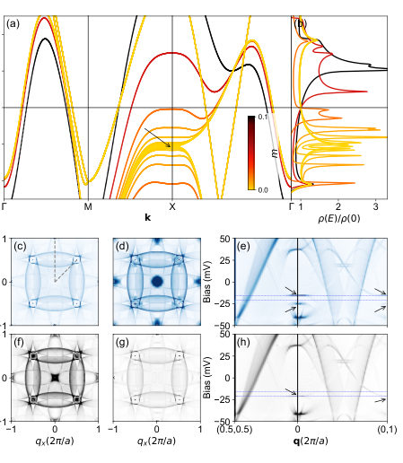
<figcaption class="paper-figure-caption"><b>Fig 2.</b> FIG. 2. Loop currents in Sr2RuO4 and their signa- tures in QPI. (a) Electronic band structure of Sr2RuO4 in a 2-atom unit cell including loop current order. We show the band structure for loop currents with a strength of m = 0, 0.001, 0.002, 0.005, 0.01, 0.02, 0.05, and 0.1, respectively. The loop current order has been added only on the dxy band. A clear splitting of the dxy VHs can be seen which increases with increasing strength of the loop currents. (b) Normalized density of states ρ(E)/ρ(0) corresponding to the same mod- els, also showing the opening of a partial gap, with a width which increases similar to the splitting of the dxy VHs. (c, d) Constant energy maps ˜g(q, V ) of the QPI...</figcaption>
</figure>
<figure class="paper-figure-card">
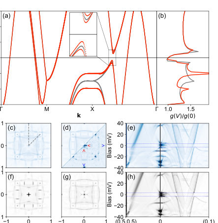
<figcaption class="paper-figure-caption"><b>Fig 3.</b> FIG. 3. Signatures of loop currents in QPI including SOC. (a, b) Band structure and cLDOS for a model of the surface of Sr2RuO4 including spin-orbit coupling and loop currents with m = 0.005. The SOC-induced hybridization gap close to the Fermi energy can be clearly seen. The loop currents result in a small splitting of about 2meV at the gap edges of the hybridization gap. (c, d) Constant energy map ˜g(q, V ) of the QPI for V1 = −2.8mV and V2 = 3.36mV for a QPI map with loop currents corresponding to an ordered moment of m = 0.005. In (d), the lower right half shows an experimental QPI image at the same voltage from ref. [20] for comparison. Blue and red arrowheads indicate symmetry-...</figcaption>
</figure>
<figure class="paper-figure-card">
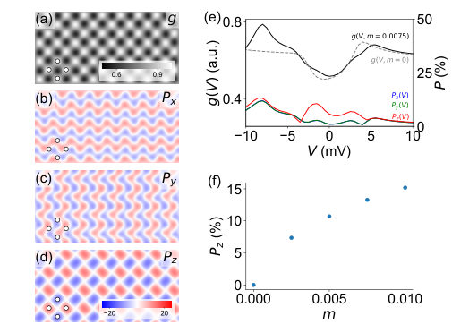
<figcaption class="paper-figure-caption"><b>Fig 4.</b> FIG. 4. Detection of loop currents using spin-polarized STM. (a-d) Map of the continuum DOS g(r, V ) for 8 mV (a) and the spin polarization along the x (b), y (c) and z (d) axes at the same energy. Clear spin polarization can be observed. Green circles indicate positions of Sr atoms, which are the atoms seen in atomically resolved topographic images. (e) Continuum density of states g(V ) and spin polarization P(V ) as a function of bias voltage V , showing strongest spin polar- ization at the position of the dxy Van Hove singularity and at the edges of the hybridization gap. (f) Maximal spin po- larization Pz as a function of strength of the ordered moment in the loop current phase. The...</figcaption>
</figure>
</div>

<p><strong>Summary.</strong> This work provides theoretical predictions for detecting loop current orders—spontaneous orbital currents—in quantum materials like cuprates and $ ext{Sr}_2   ext{RuO}_4$. By simulating STM/STS measurements on tight-binding models, the authors show that such order manifests as measurable spectral gaps in the DOS and characteristic patterns in QPI maps. These predictions guide future experimental efforts to confirm this exotic form of electronic ordering.</p>
<p><strong>Why it may be interesting.</strong> While focused on condensed matter physics, the detailed mapping of symmetry breaking (time-reversal symmetry) to measurable spectroscopic fingerprints is highly relevant to understanding emergent order parameters in strongly correlated systems, which shares conceptual links with many-body dynamics studied in AMO contexts.</p>
<details>
<summary>Detailed structure</summary>
<p><strong>Main problem.</strong> The primary goal is to develop specific theoretical predictions for how loop current orders, which break time-reversal symmetry, can be detected using low temperature Scanning Tunneling Microscopy and Spectroscopy (STM/STS) in quantum materials.</p>
<p><strong>Main result.</strong> Loop currents are predicted to cause a splitting of Van Hove singularities (VHS) in the local density of states (DOS), leading to partial energy gaps ($\sim 10-20 	ext{ meV}$), and they predict the emergence of measurable spin polarization detectable by spin-polarized STM.</p>
<p><strong>Method.</strong> The authors use continuum Green's function methods applied to tight-binding models, simulating spectroscopic maps (LDOS) and Quasi-Particle Interference (QPI) patterns for both cuprates and $ ext{Sr}_2   ext{RuO}_4$.</p>
<p><strong>Model / system.</strong> The study applies theoretical modeling to high-temperature cuprate superconductors and the surface layer of $   ext{Sr}<em ext_LC="ext{LC">2   ext{RuO}_4$, incorporating loop current terms ($\hat{H}</em>$) into tight-binding Hamiltonians.}</p>
<p><strong>Key observables.</strong> Spectroscopic maps (DOS), QPI patterns with characteristic scattering vectors, and finite spin polarization detectable by spin-polarized STM.</p>
<p><strong>Important parameters / regimes.</strong> Loop current strength ($m$), energy gap size ($\Delta E \sim 10-20 	ext{ meV}$), and the presence/absence of Spin-Orbit Coupling (SOC).</p>
<p><strong>Assumptions / limitations.</strong> The calculations simplify by assuming staggered loop currents across the unit cell, and they neglect potential self-energy effects accompanying the order formation.</p>
<p><strong>Figures summary.</strong> Figures illustrate DOS splitting and QPI changes in both cuprate and $ ext{Sr}_2   ext{RuO}_4$ models as a function of loop current strength ($m$), alongside predicted spin polarization maps for SP-STM detection.</p>
<p><strong>Paper structure.</strong> The paper establishes the physical context (loop currents in superconductors), details the theoretical framework using tight-binding models, and then presents specific predictions regarding observable signatures—namely DOS splitting, QPI changes, and spin polarization—for both cuprates and ruthenates.</p>
</details>
<details>
<summary>Abstract</summary>
<p>The emergence of loop current phases, where spontaneous loops of orbital currents give rise to a weak local magnetic moments, has been proposed to exist in a number of quantum materials based on measurements that pick up weak signatures of time reversal symmetry breaking or small magnetic moment order. The most prominent example is as an explanation of the pseudogap phase on the underdoped side of the phase diagram of the high-temperature cuprate superconductors, but more recently, it has been proposed to occur in Kagome materials and at the surface layer of Sr$_2$RuO$_4$. Experimental results have, however, been inconclusive so far, some detecting signatures that can be understood as emerging due to loop current phases, whilst others have not detected any significant proof. One of the techniques that should be able to pick up local signatures of loop current orders is low temperature scanning tunneling microscopy and spectroscopy (STM/STS), however firm predictions of how to detect them are missing. Here, we provide specific predictions for how loop current orders in a square lattice can be seen in spectroscopic maps, using models of the cuprate high-temperature superconductors and of the surface layer of Sr$_2$RuO$_4$. We find that, besides lifting degeneracies at the specific ordering vector of the loop current order, a finite spin polarisation emerges when spin-orbit coupling is present, signatures of which can be detected in spin-polarised STM.</p>
</details>
<p><sub><a href="#top">↑ back to top</a></sub></p>

<p><a id="paper-2607.19884"></a></p>
<h3 id="propagation-dynamics-of-high-gain-vortex-beams-in-symmetry-broken-media-via-forward-and-backward-three-wave-mixing"><a href="http://arxiv.org/abs/2607.19884v1">Propagation dynamics of high-gain vortex beams in symmetry-broken media via forward and backward three-wave mixing</a></h3>
<p><strong>Authors:</strong> Fan Meng, Hao Zhu, Xin-Yao Huang, Guo-Feng Zhang<br>
<strong>Type:</strong> theory · <strong>Category:</strong> quantum information and computing · <strong>PDF:</strong> <a href="https://arxiv.org/pdf/2607.19884v1">https://arxiv.org/pdf/2607.19884v1</a><br>
<strong>Analysis basis:</strong> full PDF text, analyzed in chunks
<strong>Topic relevance:</strong> <code>driven-dissipative phase transition</code> <strong>3/5</strong> · <code>interference shaping light</code> <strong>3/5</strong> · <code>analog quantum simulation</code> <strong>2/5</strong> · <code>methods for driven-dissipative</code> <strong>2/5</strong> · <code>non-equilibrium dynamics</code> <strong>2/5</strong> · <code>Keldysh / 2PI / non-Gaussian methods</code> <strong>1/5</strong> · <code>Tavis-Cummings &amp; cavity-many-emitter</code> <strong>1/5</strong> · <code>correlated / nonlocal dissipation</code> <strong>1/5</strong> · <code>correlated cavity matter</code> <strong>1/5</strong> · <code>entanglement &amp; information structure</code> <strong>1/5</strong> · <code>non-equilibrium universality</code> <strong>1/5</strong></p>
<div class="figure-strip-hint">↔ Scroll figures horizontally</div>
<div class="paper-figures-scroll">
<figure class="paper-figure-card">
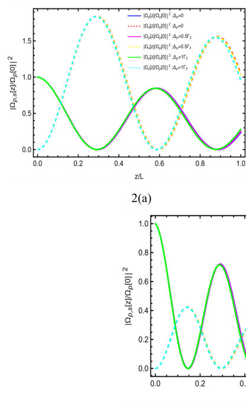
<figcaption class="paper-figure-caption"><b>Fig 1.</b> Fig. 2. During forward propagation, the relative intensities  </figcaption>
</figure>
<figure class="paper-figure-card">
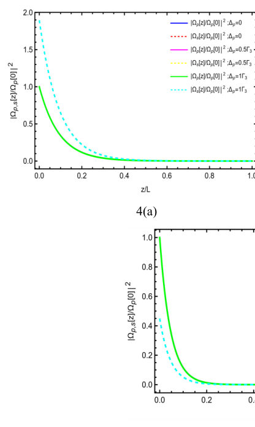
<figcaption class="paper-figure-caption"><b>Fig 2.</b> Fig. 4. During backward propagation, the relative intensities  </figcaption>
</figure>
<figure class="paper-figure-card">
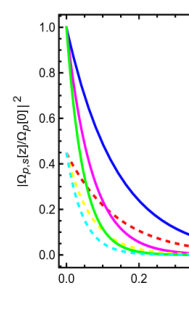
<figcaption class="paper-figure-caption"><b>Fig 3.</b> Fig. 5. During backward propagation, the relative intensities  </figcaption>
</figure>
<figure class="paper-figure-card">
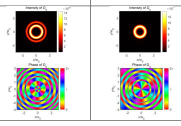
<figcaption class="paper-figure-caption"><b>Fig 4.</b> Fig. 6(a). During forward propagation, when the probe field p  is prepared in a LG vortex mode</figcaption>
</figure>
<figure class="paper-figure-card">
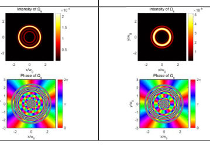
<figcaption class="paper-figure-caption"><b>Fig 5.</b> Fig. 6(b). During the forward propagation process, when the probe field is prepared in a LG mode</figcaption>
</figure>
</div>

<p><strong>Summary.</strong> This paper analyzes the dynamics of vortex beams propagating through a three-level atomic medium using forward and backward three-wave mixing. By comparing both processes, the authors demonstrate that the backward TWM scheme is superior for generating high-gain, high-fidelity structured light. The findings suggest practical applications in quantum communication and computation utilizing OAM.</p>
<p><strong>Why it may be interesting.</strong> This work directly addresses quantum optics phenomena—specifically structured light propagation and nonlinear interactions in atomic media—which are foundational to developing integrated photonic components for quantum communication.</p>
<details>
<summary>Detailed structure</summary>
<p><strong>Main problem.</strong> The study investigates how high-gain vortex beams propagate through symmetry-broken media using both forward and backward three-wave mixing (TWM) processes.</p>
<p><strong>Main result.</strong> Backward TWM was found to yield superior performance compared to the forward process, exhibiting higher signal gain, improved fidelity, and more stable transmission characteristics.</p>
<p><strong>Method.</strong> The authors employed a perturbative approximation and steady-state assumption to solve the coupled Maxwell-Bloch equations derived from the system Hamiltonian.</p>
<p><strong>Model / system.</strong> The model is a three-level ladder-type atomic system exhibiting broken inversion symmetry, driven by a strong control field ($\omega_c$) interacting with weak probe ($\omega_p$) and signal ($\omega_s$) fields.</p>
<p><strong>Key observables.</strong> Vortex light properties, including topological charge (OAM), gain, fidelity, transmission characteristics, and spatial profile modulation.</p>
<p><strong>Important parameters / regimes.</strong> The analysis focuses on the Autler-Townes Splitting (ATS) regime; detuning ($\Delta_p$) has a negligible influence on gain, while optical depth only affects the rate of reaching maximum gain.</p>
<p><strong>Assumptions / limitations.</strong> Key assumptions include treating the control field as strong and continuous ($|\Omega_c| \gg |\Omega_p|, |\Omega_s|$), using the perturbative approximation, and assuming steady-state conditions ($\partial/\partial t = 0$).</p>
<p><strong>Figures summary.</strong> Figure 1 schematically illustrates the symmetry-broken three-level ladder system setup. Figure 2 likely shows relative intensities of probe and signal fields during forward propagation under varying decay rates.</p>
<p><strong>Paper structure.</strong> The paper establishes the physical model using a Hamiltonian, derives coupled equations of motion via the Liouville equation, applies approximations to simplify these equations, and then solves the resulting steady-state Maxwell-Bloch equations for both Forward TWM (FTWM) and Backward TWM (BTWM).</p>
</details>
<details>
<summary>Abstract</summary>
<p>In recent years, vortex light, a distinctive form of structured light, has attracted considerable attention owing to its unique properties and the rich physical phenomena arising from its interaction with matter. In this paper, we investigate the propagation dynamics of vortex beams in a symmetry-broken three-level system based on forward and backward three-wave mixing (TWM) processes. We find that both processes enable the transfer of high-gain vortex light, with the associated topological charges obeying identical algebraic relations. The forward process exhibits periodic oscillatory transmission and modulates the transverse spatial profile of the generated signal vortex field, whereas the backward process features stable transmission and produces a signal field with higher gain and improved fidelity. Under the Autler-Townes splitting (ATS) regime, the probe field detuning in both schemes has a negligible influence on the gain. Optical depth influences only the rate at which the gain approaches its maximum, while the peak value remains unchanged. These results constitute a meaningful extension of the work reported in reference [40] and may provide a feasible approach for quantum communication, quantum computation, and the generation of high-gain, high-fidelity vortex light.</p>
</details>
<p><sub><a href="#top">↑ back to top</a></sub></p>

<p><a id="paper-2607.20195"></a></p>
<h3 id="mesoscopic-mechanical-superpositions-by-gluing-individual-quantum-systems"><a href="http://arxiv.org/abs/2607.20195v1">Mesoscopic mechanical superpositions by gluing individual quantum systems</a></h3>
<p><strong>Authors:</strong> Thiago Guerreiro<br>
<strong>Type:</strong> both · <strong>Category:</strong> other · <strong>PDF:</strong> <a href="https://arxiv.org/pdf/2607.20195v1">https://arxiv.org/pdf/2607.20195v1</a><br>
<strong>Analysis basis:</strong> full PDF text, analyzed in chunks
<strong>Topic relevance:</strong> <code>quantum measurements</code> <strong>3/5</strong> · <code>QC/QI experiment</code> <strong>2/5</strong> · <code>measurement-induced transitions</code> <strong>2/5</strong> · <code>methods for driven-dissipative</code> <strong>2/5</strong> · <code>Keldysh / 2PI / non-Gaussian methods</code> <strong>1/5</strong> · <code>analog quantum simulation</code> <strong>1/5</strong> · <code>correlated / nonlocal dissipation</code> <strong>1/5</strong> · <code>driven-dissipative phase transition</code> <strong>1/5</strong> · <code>entanglement &amp; information structure</code> <strong>1/5</strong> · <code>interference shaping light</code> <strong>1/5</strong> · <code>non-equilibrium dynamics</code> <strong>1/5</strong> · <code>quantum optics experiment</code> <strong>1/5</strong></p>
<div class="figure-strip-hint">↔ Scroll figures horizontally</div>
<div class="paper-figures-scroll">
<figure class="paper-figure-card">
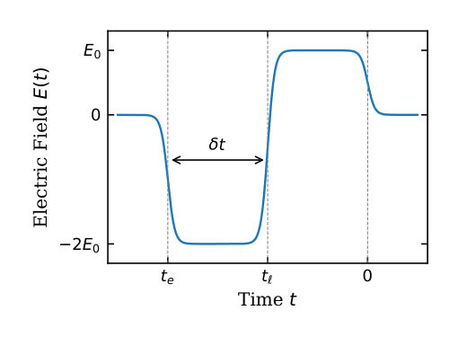
<figcaption class="paper-figure-caption"><b>Fig 1.</b> FIG. 1: Time-dependent electric field for generating a coherent superposition of momentum kicks from the inelastic collision of a time-bin electron state with an initially neutral levitated particle. If the electron arrives at te, the particle receives a momentum kick of δp = eE0δt, whereas if it arrives at tℓ, the momentum kick is −δp.</figcaption>
</figure>
<figure class="paper-figure-card">
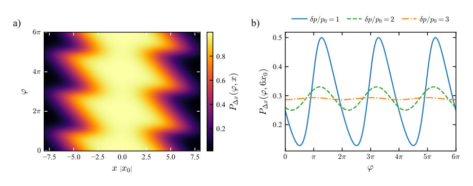
<figcaption class="paper-figure-caption"><b>Fig 2.</b> FIG. 2: a) Interference in the position probability P∆x(φ, x) as a function of φ for initial momentum kick δp = p0, decoherence rate Γ/ω = 0.2, initial occupation number ¯n = 0.5 and resolution ∆x = 10x0. b) Interference of position probability as a function of φ, at x = 6x0 for different initial kicks δp = p0, 2p0, 3p0, with the same remaining parameters as in a).</figcaption>
</figure>
<figure class="paper-figure-card">
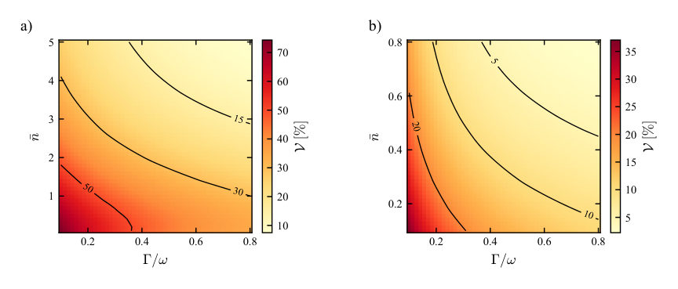
<figcaption class="paper-figure-caption"><b>Fig 3.</b> FIG. 3: Interference visibility as a function of initial occupation number ¯n and decoherence rate Γ for a) δp = p0, b) δp = 2p0. Remaining parameters are x = 6x0, ∆x = 10x0, η = 1.</figcaption>
</figure>
<figure class="paper-figure-card">
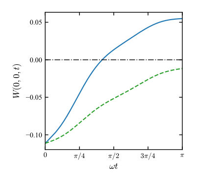
<figcaption class="paper-figure-caption"><b>Fig 4.</b> FIG. 4: Time evolution of the Wigner function at the origin of phase space W(x = 0, p = 0, t) for an initial state with ¯n = 0.5, δp = p0, η = 1, and φ = π, display- ing negative values, i.e. non-classicality over the course of the protocol. We consider two values for the decoher- ence: Γ/ω = 0.2 (solid blue line), and Γ/ω = (1/3) × 0.2 (dashed green line), with the latter recoil heating rate enabled by a radially polarized optical trap.</figcaption>
</figure>
<figure class="paper-figure-card">
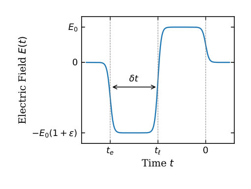
<figcaption class="paper-figure-caption"><b>Fig 5.</b> FIG. 5: Electric field profile for producing a superposition of positive and negative momentum kicks ±δp for an arbitrary initial charge Z of the nanoparticle.</figcaption>
</figure>
</div>

<p><strong>Summary.</strong> The paper details a method to create mechanical Schrödinger cat states in an optically levitated nanoparticle by coupling it to the momentum kicks from single electrons. By controlling the phase of these electron time-bin states, high-visibility interference fringes are generated, allowing for tests of quantum mechanics on unprecedentedly large objects while mitigating common decoherence sources.</p>
<p><strong>Why it may be interesting.</strong> This work directly addresses fundamental questions about quantum mechanics at the mesoscopic scale by providing a robust experimental pathway that leverages single-particle interactions to manipulate macroscopic quantum states, which is highly relevant to open quantum systems and quantum sensing.</p>
<details>
<summary>Detailed structure</summary>
<p><strong>Main problem.</strong> The authors propose a novel protocol to prepare and observe mesoscopic quantum superpositions of mechanical motion (Schrödinger kittens) in an optically levitated nanoparticle.</p>
<p><strong>Main result.</strong> They demonstrate that coherence can be maintained over single oscillation periods by coupling the particle's state to controllable, phase-dependent momentum kicks imparted by single electrons. This method bypasses limitations of previous techniques for testing quantum mechanics at macroscopic scales.</p>
<p><strong>Method.</strong> The protocol involves using time-bin states of single electrons to induce a superposition of momentum kicks ($\pm \delta p$) onto the levitated nanoparticle, followed by interferometric measurement of the particle's position probability distribution.</p>
<p><strong>Model / system.</strong> The system is an amorphous $    ext{SiO}_2$ bead trapped in a harmonic potential. The quantum dynamics are analyzed using master equations and Wigner/characteristic functions to track decoherence from sources like gas collisions and trap fluctuations.</p>
<p><strong>Key observables.</strong> Interference fringes in the particle's Center-of-Mass (CoM) position probability $P_{\Delta x}(\phi, x)$, non-classicality confirmed by Wigner negativity, and interference visibility ($V$).</p>
<p><strong>Important parameters / regimes.</strong> The momentum kick $\delta p$ is controlled via external electric fields; decoherence rates ($\Gamma$) are compared against the trap frequency ($\omega$), with timescales set relative to the oscillation period ($\pi/\omega$).</p>
<p><strong>Assumptions / limitations.</strong> It assumes that the state preparation time ($\delta t$) is short enough such that harmonic motion and decoherence can be treated as approximately frozen during the kick application.</p>
<p><strong>Figures summary.</strong> Figures illustrate the interference pattern $P_{\Delta x}(\phi, x)$ varying sinusoidally with electron phase $\phi$, show Wigner function negativity for non-classical states, and plot visibility dependence on initial occupation number and decoherence rate.</p>
<p><strong>Paper structure.</strong> The paper develops from proposing the protocol using time-bin electrons to induce momentum superpositions. It mathematically models the evolution of the quantum state (using master equations/Wigner functions) while analyzing various sources of decoherence, culminating in predictions for observable interference fringes.</p>
</details>
<details>
<summary>Abstract</summary>
<p>We propose a protocol for preparing mechanical Schrödinger kittens -- mesoscopic quantum superpositions of coherent motional states of an optically levitated nanoparticle -- by adhering single electron time-bin states to its surface. Over short protocol timescales, coherence of the mesoscopic superposition survives the dominant decoherence mechanisms afflicting levitated systems, and can be observed by varying the phase of the time-bin electrons. Interference fringes can be detected with real-time, near-Heisenberg limited interferometry of photons scattered from the particle. This approach eliminates the need for coherent state expansion, dark potentials, and particle release-and-recapture mechanisms, providing a new route to test quantum mechanics in unprecedented scales.</p>
</details>
<p><sub><a href="#top">↑ back to top</a></sub></p>

<p><a id="paper-2607.19737"></a></p>
<h3 id="the-quantum-adiabatic-theorem-for-non-hermitian-dynamics"><a href="http://arxiv.org/abs/2607.19737v1">The Quantum Adiabatic Theorem for Non-Hermitian Dynamics</a></h3>
<p><strong>Authors:</strong> G. M. V. S. Aponso, B. P. W. Fernando, K. K. W. A. S. Kumara, R. P. K. De Silva<br>
<strong>Type:</strong> theory · <strong>Category:</strong> other · <strong>PDF:</strong> <a href="https://arxiv.org/pdf/2607.19737v1">https://arxiv.org/pdf/2607.19737v1</a><br>
<strong>Analysis basis:</strong> full PDF text, analyzed in chunks
<strong>Topic relevance:</strong> <code>driven-dissipative phase transition</code> <strong>3/5</strong> · <code>methods for driven-dissipative</code> <strong>3/5</strong> · <code>analog quantum simulation</code> <strong>2/5</strong> · <code>correlated / nonlocal dissipation</code> <strong>2/5</strong> · <code>non-equilibrium dynamics</code> <strong>2/5</strong> · <code>non-equilibrium universality</code> <strong>2/5</strong> · <code>Keldysh / 2PI / non-Gaussian methods</code> <strong>1/5</strong> · <code>Kondo &amp; dissipative impurity</code> <strong>1/5</strong> · <code>entanglement &amp; information structure</code> <strong>1/5</strong></p>
<div class="figure-strip-hint">↔ Scroll figures horizontally</div>
<div class="paper-figures-scroll">
<figure class="paper-figure-card">
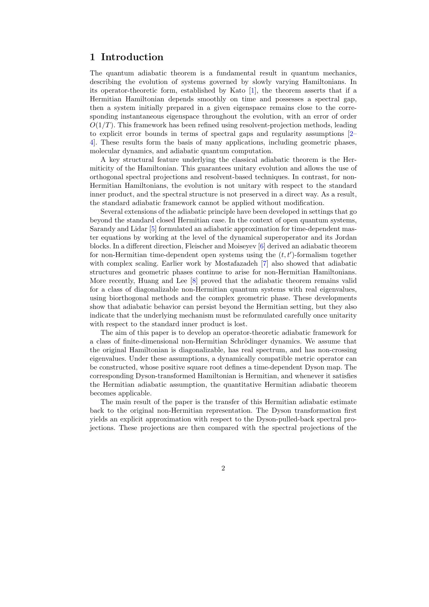
<figcaption class="paper-figure-caption"><b>Fig 1.</b> Low-resolution page preview, page 2</figcaption>
</figure>
<figure class="paper-figure-card">
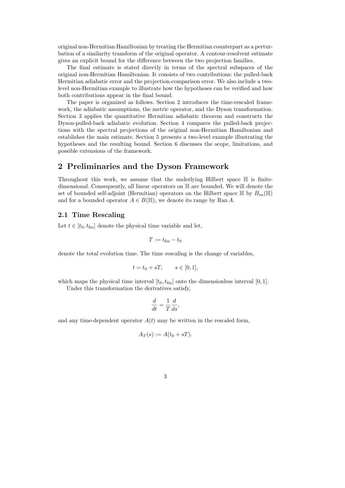
<figcaption class="paper-figure-caption"><b>Fig 2.</b> Low-resolution page preview, page 3</figcaption>
</figure>
<figure class="paper-figure-card">
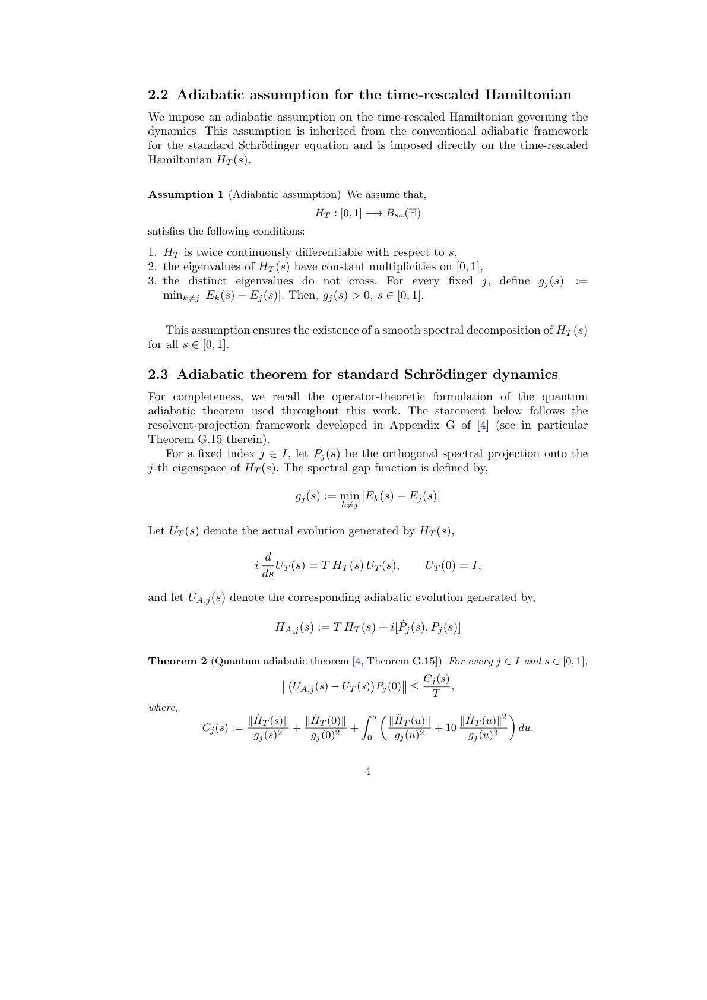
<figcaption class="paper-figure-caption"><b>Fig 3.</b> Low-resolution page preview, page 4</figcaption>
</figure>
<figure class="paper-figure-card">
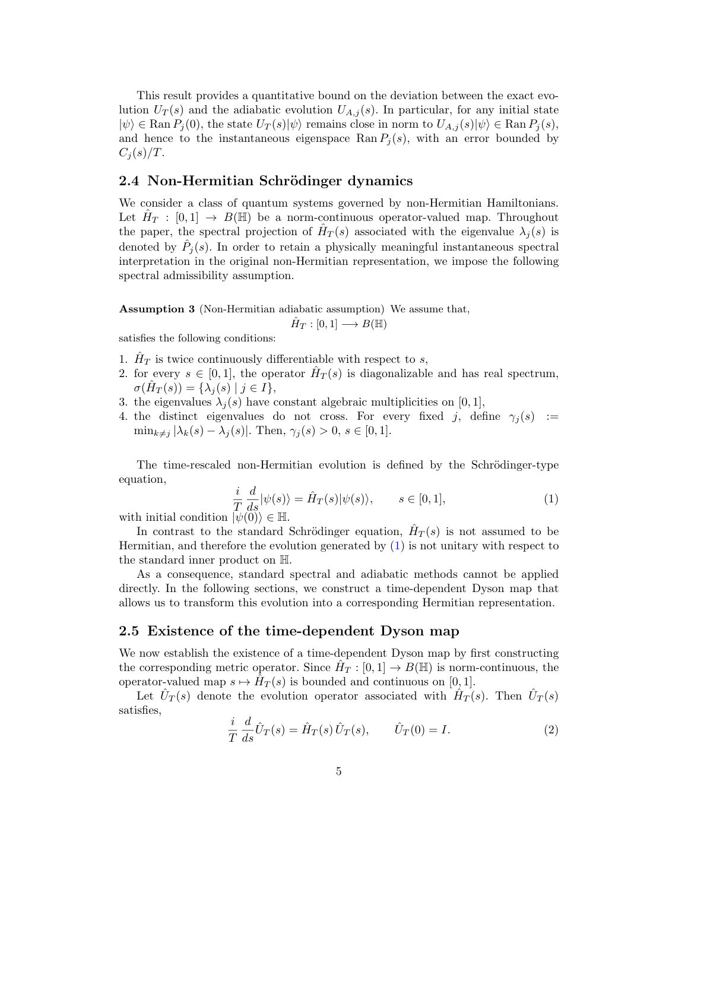
<figcaption class="paper-figure-caption"><b>Fig 4.</b> Low-resolution page preview, page 5</figcaption>
</figure>
<figure class="paper-figure-card">
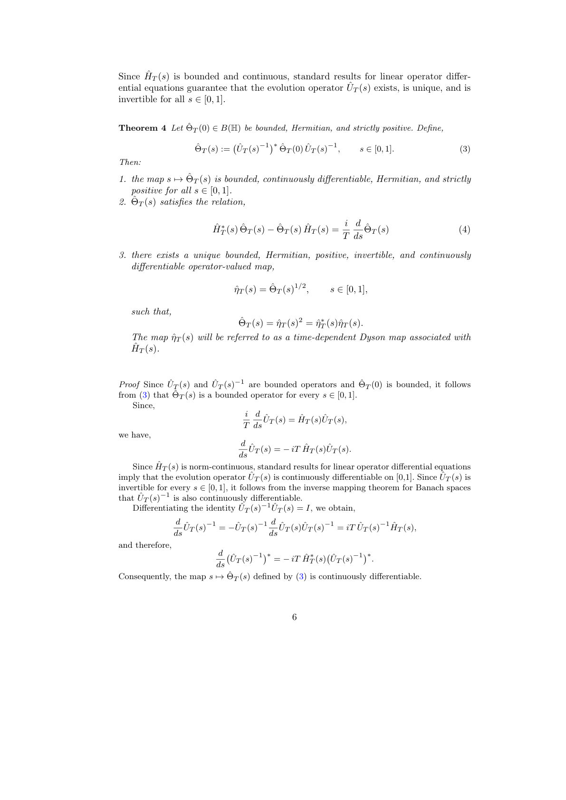
<figcaption class="paper-figure-caption"><b>Fig 5.</b> Low-resolution page preview, page 6</figcaption>
</figure>
</div>

<p><strong>Summary.</strong> This paper develops a quantitative adiabatic theorem for non-Hermitian quantum dynamics by transforming the problem into an equivalent Hermitian system using a Dyson map. It derives an explicit error bound that accounts for both the standard adiabatic approximation error and the additional error introduced by the transformation itself. This provides a powerful theoretical tool for analyzing time evolution in open or dissipative quantum systems.</p>
<p><strong>Why it may be interesting.</strong> This work is highly relevant for AMO physics and open quantum systems because non-Hermiticity naturally arises when coupling quantum systems to an environment or when considering gain/loss processes. Providing a rigorous adiabatic framework for these dynamics is crucial for modeling physical reality beyond simple unitary evolution.</p>
<details>
<summary>Detailed structure</summary>
<p><strong>Main problem.</strong> The core problem is developing a rigorous, quantitative adiabatic estimate for quantum systems whose dynamics are governed by non-Hermitian Hamiltonians.</p>
<p><strong>Main result.</strong> The authors establish an explicit error bound for the adiabatic approximation in non-Hermitian settings by transforming the system into an equivalent Hermitian representation and quantifying the transformation error.</p>
<p><strong>Method.</strong> The method involves constructing a dynamically compatible Dyson map using a metric operator to transform the non-Hermitian Hamiltonian ($\hat{H}_T$) into a Hermitian counterpart ($ar{H}_T$). The standard adiabatic theorem is then applied in this transformed space, with errors quantified via contour-resolvent estimates.</p>
<p><strong>Model / system.</strong> The analysis applies to finite-dimensional quantum systems evolving under time-dependent, non-Hermitian Schrödinger dynamics. A two-level model is used to illustrate the full scope of the theorem and its error components.</p>
<p><strong>Key observables.</strong> The final estimate controls the evolution operator error $|e^{U_{A, \pm}(s)} - \hat{U}_T(s)|$, and the analysis tracks spectral projections and gap sizes in the transformed Hermitian system.</p>
<p><strong>Important parameters / regimes.</strong> The time parameter $s$ (ranging from 0 to 1), the spectral gap of the effective Hermitian Hamiltonian $ar{H}_T(s)$, and the adiabatic constant $T$.</p>
<p><strong>Assumptions / limitations.</strong> Key assumptions include that the original non-Hermitian Hamiltonian must be diagonalizable with a real spectrum, possess non-crossing eigenvalues, and satisfy a contour-resolvent condition for the transformed system.</p>
<p><strong>Figures summary.</strong> The notes do not describe specific figures, but mention the final estimate containing two explicit error contributions: the pulled-back Hermitian adiabatic error and the projection-comparison error, illustrated by the two-level model.</p>
<p><strong>Paper structure.</strong> The paper first identifies the need for an adiabatic theorem extension to non-Hermitian dynamics. It then introduces the Dyson map construction to achieve a Hermitian representation ($ar{H}_T$). Finally, it applies standard adiabatic techniques in this transformed space and pulls the resulting estimate back to yield the final bound.</p>
</details>
<details>
<summary>Abstract</summary>
<p>We establish a quantitative adiabatic estimate for a class of finite-dimensional non-Hermitian Schrödinger dynamics. The original non-Hermitian Hamiltonian is assumed to be diagonalizable with real spectrum and non-crossing eigenvalues. We then construct a dynamically compatible time-dependent metric operator, and its positive square root defines a Dyson map. The associated Dyson-transformed Hamiltonian is Hermitian.   When this Dyson-transformed Hamiltonian satisfies the Hermitian adiabatic assumption, the standard resolvent-projection method gives an explicit adiabatic estimate in the Hermitian representation. Pulling this estimate back through the Dyson map gives an approximation in the original non-Hermitian representation. The resulting Dyson-pulled-back projections are then compared with the spectral projections of the original non-Hermitian Hamiltonian by using a contour-resolvent estimate. The final bound contains two contributions: the pulled-back Hermitian adiabatic error and the projection-comparison error. A two-level non-Hermitian model is presented to illustrate the hypotheses of the theorem and the two contributions appearing in the final estimate.</p>
</details>
<p><sub><a href="#top">↑ back to top</a></sub></p>

<p><a id="paper-2607.19477"></a></p>
<h3 id="quantum-resonance-enhanced-performance-of-quantum-battery"><a href="http://arxiv.org/abs/2607.19477v1">Quantum resonance-enhanced performance of quantum battery</a></h3>
<p><strong>Authors:</strong> Ankita Mazumdar, Shashi C. L. Srivastava, Sanku Paul<br>
<strong>Type:</strong> theory · <strong>Category:</strong> statistical mechanics · <strong>PDF:</strong> <a href="https://arxiv.org/pdf/2607.19477v1">https://arxiv.org/pdf/2607.19477v1</a><br>
<strong>Analysis basis:</strong> full PDF text, analyzed in chunks
<strong>Topic relevance:</strong> <code>non-equilibrium dynamics</code> <strong>3/5</strong> · <code>analog quantum simulation</code> <strong>2/5</strong> · <code>driven-dissipative phase transition</code> <strong>2/5</strong> · <code>entanglement &amp; information structure</code> <strong>2/5</strong> · <code>methods for driven-dissipative</code> <strong>2/5</strong> · <code>non-equilibrium universality</code> <strong>2/5</strong> · <code>Frenkel-Kontorova</code> <strong>1/5</strong> · <code>Keldysh / 2PI / non-Gaussian methods</code> <strong>1/5</strong> · <code>correlated / nonlocal dissipation</code> <strong>1/5</strong></p>
<div class="figure-strip-hint">↔ Scroll figures horizontally</div>
<div class="paper-figures-scroll">
<figure class="paper-figure-card">
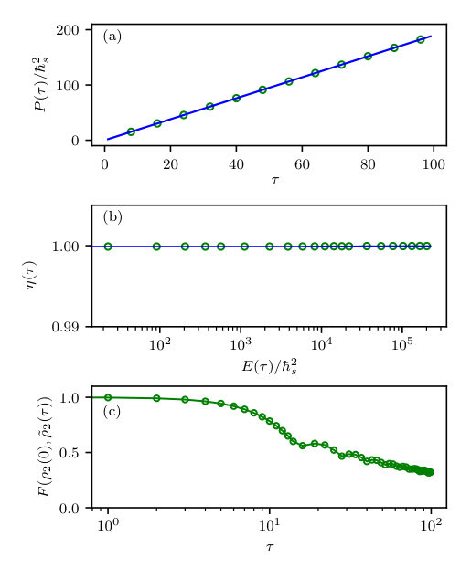
<figcaption class="paper-figure-caption"><b>Fig 1.</b> FIG. 1. Plot (a) illustrates the dynamics of charging power while efficiency is shown in (b) with respect to stored energy. The plot in (c) presents the dynamics of F(ρ2(0), ˜ρ2(τ)). In (a) and (b), green circles represent numerical results whereas blue solid line corresponds to analytical results using Eq. 6 and Eq. S12, respectively. The remaining parameters are fixed at: K1 = 9, K2 = 10, K = 0.1, µ1 = 2, µ2 = 1, L = 211</figcaption>
</figure>
<figure class="paper-figure-card">
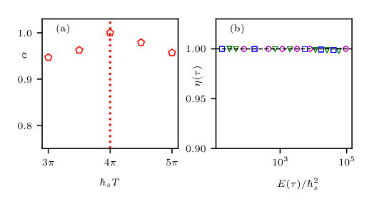
<figcaption class="paper-figure-caption"><b>Fig 2.</b> FIG. 2. (a) The exponent α of P(τ) ∝τ α is plotted with ℏsT to observe the effect of higher order resonances. The vertical red line indicates the position of the primary resonance. (b) η is plotted for higher order resonances by considering l l′ = 3 4 (magenta circles), 7 8 (green lower triangles) and 9 8 (blue squares). The black dashed line is guide to an eye to indicate η = 1. The other parameters are same as in Fig. 1.</figcaption>
</figure>
<figure class="paper-figure-card">
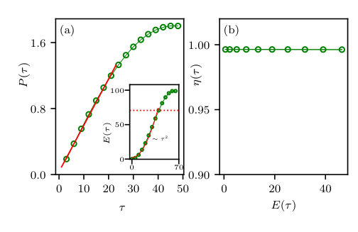
<figcaption class="paper-figure-caption"><b>Fig 3.</b> FIG. 3. (a) The dynamics of P(τ) is shown, with the red solid line indicating a linear fit. The inset displays E(τ), where the numerical data are fitted by E(τ) ∼τ 2 (red solid line). The horizontal red-dashed line marks E(τ) = 70.66 i.e. almost 70% of the bandwidth, upto which the quadratic growth persists. (b) The η(τ) is plotted with respect to E(τ). Regardless of the growth of energy, η(τ) ≈1. The parameters are set as j = 50, α1 = 1, α2 = 0.05, α12 = 0.03.</figcaption>
</figure>
</div>

<p><strong>Summary.</strong> The paper demonstrates that exploiting quantum resonance can dramatically boost the performance of quantum batteries, allowing them to charge power linearly over time while maintaining near-perfect energy efficiency. This enhancement is robust and persists even when strong entanglement builds up within the coupled system models.</p>
<p><strong>Why it may be interesting.</strong> This work connects fundamental concepts from quantum thermodynamics (energy storage/extraction) with phenomena arising from periodically driven systems (quantum resonance), providing a concrete resource for energy management in quantum technologies.</p>
<details>
<summary>Detailed structure</summary>
<p><strong>Main problem.</strong> The study investigates whether quantum resonance can enhance the performance of quantum batteries, specifically aiming for stable charging power increase with time and near-unity efficiency despite strong entanglement generation.</p>
<p><strong>Main result.</strong> Quantum resonance leads to a linear increase in charging power and maintains near-unity energy extraction efficiency ($\eta \approx 1$) even when significant entanglement is generated. This enhancement mechanism is shown to be universal across different models.</p>
<p><strong>Method.</strong> The authors use analytical derivations involving Bessel functions and numerical simulations to calculate stored energy, extractable work (ergotropy), and efficiency for coupled quantum rotor and kicked top systems.</p>
<p><strong>Model / system.</strong> The system models quantum batteries using free rotors or interacting kicked tops. The dynamics are governed by time-periodic Hamiltonians incorporating both intrinsic quadratic terms ($H_0$) and nonlinear interaction/kicking potentials ($V(x_1, x_2)$).</p>
<p><strong>Key observables.</strong> Stored Energy ($E(	au)$), Extractable Work (Ergotropy $\xi(	au)$), Efficiency ($\eta(	au) = \xi/	ext{stored energy}$), and Linear Entropy ($S_L(	au)$ for entanglement).</p>
<p><strong>Important parameters / regimes.</strong> Quantum Resonance condition (rational ratio of intrinsic to driving frequency); specific resonance conditions like $\hbar s T = 4\pi$ or $K_2 \gg K$.</p>
<p><strong>Assumptions / limitations.</strong> The analysis often relies on approximations for large time ($    au$) and specific parameter limits, such as the regime where one interaction strength dominates ($K_2 \gg K$).</p>
<p><strong>Figures summary.</strong> Figures illustrate linear growth of charging power at resonance (Fig. 1a), efficiency remaining near unity under resonance (Fig. 1b), and confirmation of this effect in higher-order resonances for both rotor and kicked top models.</p>
<p><strong>Paper structure.</strong> The paper progresses by first establishing the model using free rotors, deriving analytical results showing linear power growth at resonance. It then generalizes this to an interacting kicked top model, confirming the universality of the enhancement mechanism across different physical realizations.</p>
</details>
<details>
<summary>Abstract</summary>
<p>Quantum resonance arising whenever the ratio of the intrinsic system frequency to the driving frequency becomes a rational number has been demonstrated to generate super-linear entanglement, enhance transport, quantum metrology performance and communication. Here, we demonstrate that quantum resonance can also serve as a powerful resource for quantum batteries. We model the batteries as free rotors charged via a kicked protocol. When the individual batteries are at resonance, we show both analytically and numerically that charging power increases linearly with time while efficiency (defined as the fraction of stored energy that can be extracted) remains near unity despite strong entanglement generation. Furthermore, we demonstrate that this enhanced performance persists at higher-order resonances. Demonstrating the universality of this mechanism, we show that similar enhancements arise in the interacting kicked top model, and briefly note the feasibility of its experimental realization. In a broader context, resonant charging holds significant implications for energy storage, quantum computational resources, and quantum thermodynamics.</p>
</details>
<p><sub><a href="#top">↑ back to top</a></sub></p>

<p><a id="paper-2607.20034"></a></p>
<h3 id="motility-destabilizes-an-absorbing-state-flock"><a href="http://arxiv.org/abs/2607.20034v1">Motility destabilizes an absorbing-state flock</a></h3>
<p><strong>Authors:</strong> Narayan Dutt Sharma, Subroto Mukerjee, Chandan Dasgupta, Sriram Ramaswamy<br>
<strong>Type:</strong> theory · <strong>Category:</strong> statistical mechanics · <strong>PDF:</strong> <a href="https://arxiv.org/pdf/2607.20034v1">https://arxiv.org/pdf/2607.20034v1</a><br>
<strong>Analysis basis:</strong> full PDF text, analyzed in chunks
<strong>Topic relevance:</strong> <code>driven-dissipative phase transition</code> <strong>3/5</strong> · <code>methods for driven-dissipative</code> <strong>3/5</strong> · <code>non-equilibrium universality</code> <strong>3/5</strong> · <code>non-equilibrium dynamics</code> <strong>2/5</strong> · <code>Frenkel-Kontorova</code> <strong>1/5</strong> · <code>Keldysh / 2PI / non-Gaussian methods</code> <strong>1/5</strong> · <code>analog quantum simulation</code> <strong>1/5</strong> · <code>correlated / nonlocal dissipation</code> <strong>1/5</strong></p>
<div class="figure-strip-hint">↔ Scroll figures horizontally</div>
<div class="paper-figures-scroll">
<figure class="paper-figure-card">
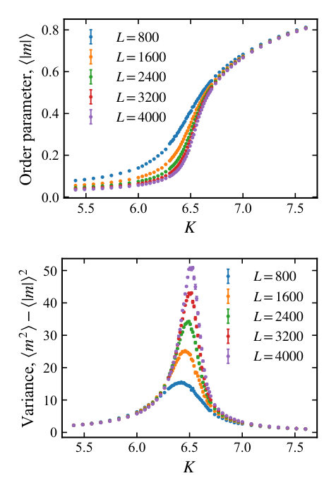
<figcaption class="paper-figure-caption"><b>Fig 1.</b> FIG. 1. Order parameter and variance as functions of the alignment strength K for a nearest neighbour interaction and ρ = 0.8.</figcaption>
</figure>
<figure class="paper-figure-card">
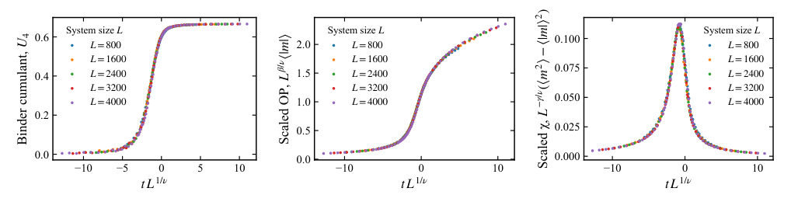
<figcaption class="paper-figure-caption"><b>Fig 2.</b> FIG. 3. Finite-size scaling collapse for nearest-neighbour interactions at density ρ = 0.8 using Kc = 6.58, ν = 1.95, β = 0.31, and γ = 1.29. Left: Binder cumulant U4. Middle: order parameter ⟨|m|⟩. Right: variance χ of the magnetization. t is the reduced alignment, t = (K −Kc)/Kc.</figcaption>
</figure>
<figure class="paper-figure-card">
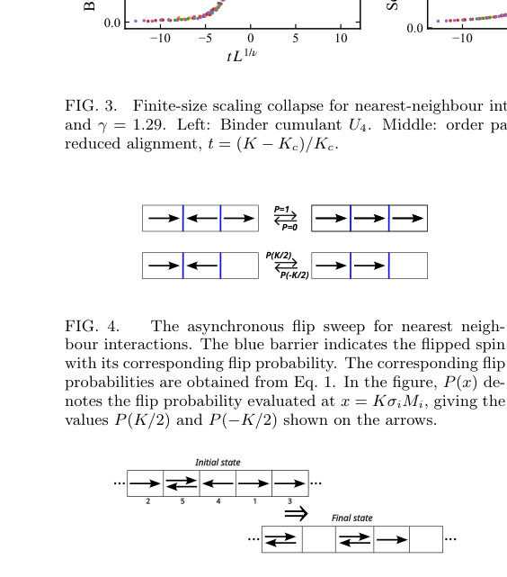
<figcaption class="paper-figure-caption"><b>Fig 3.</b> FIG. 5. The asynchronous jump sweep. The number shows the order in which the moves are made. Both spins at a doubly occupied site jump in a single move if allowed to do so by the occupancy of its neighbours.</figcaption>
</figure>
<figure class="paper-figure-card">
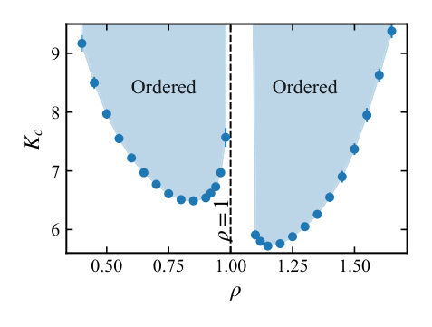
<figcaption class="paper-figure-caption"><b>Fig 4.</b> FIG. 6. Phase diagram Kc(ρ) for nearest-neighbour interac- tions (R = 1). As ρ →1, no finite critical alignment strength is observed, effectively Kc →∞. Near ρ = 1, strong fluc- tuations and pronounced finite-size effects make the precise identification of the transition increasingly difficult.</figcaption>
</figure>
<figure class="paper-figure-card">

<figcaption class="paper-figure-caption"><b>Fig 5.</b> FIG. 7. The exponent variation as a function of density for R=1. The points in the region ρ ∈(0.81, 1.19) are excluded because of the singularity at ρ = 1. Top left: Variation of ν, Top right: Variation of β/ν, Bottom: Variation of γ/ν.</figcaption>
</figure>
</div>

<p><strong>Summary.</strong> The paper models a 1D lattice system exhibiting an ordered phase that typically gets stuck in an absorbing state. By introducing biased motility through particle hopping, the authors show this activity destabilizes the order, driving a continuous transition to a disordered state. The findings are quantitatively confirmed using finite-size scaling analysis of critical exponents.</p>
<p><strong>Why it may be interesting.</strong> This work provides quantitative insights into how energy injection or active transport (motility) can fundamentally change the steady-state behavior of interacting classical systems, moving them away from simple absorbing traps towards dynamic disorder.</p>
<details>
<summary>Detailed structure</summary>
<p><strong>Main problem.</strong> The study investigates how introducing activity, specifically biased motility, affects an ordered phase that otherwise settles into an absorbing state in a many-body system.</p>
<p><strong>Main result.</strong> Motility destabilizes the absorbing ferromagnetic state, causing a continuous 'deflocking' transition to a disordered state. The critical exponents satisfy hyperscaling relations for one dimension.</p>
<p><strong>Method.</strong> The analysis relies heavily on finite-size scaling techniques applied to physical quantities like the Binder cumulant and global magnetization to characterize the phase transition.</p>
<p><strong>Model / system.</strong> A one-dimensional lattice model using Ising spins ($\sigma_i = \pm 1$) with local interactions. The dynamics are governed by a combination of spin-flip rules (non-motile limit) and an asynchronous hopping/flipping process that introduces motility.</p>
<p><strong>Key observables.</strong> Global magnetization ($m$), variance ($\chi$), Binder cumulant ($U_4$), and critical exponents ($
u, eta, \gamma$).</p>
<p><strong>Important parameters / regimes.</strong> Alignment strength ($K$), particle density ($
ho$), and the dimensionality ($d=1$).</p>
<p><strong>Assumptions / limitations.</strong> The analysis assumes that the transition can be characterized by standard scaling laws, though some notes mention limitations regarding symmetry breaking in the microscopic dynamics.</p>
<p><strong>Figures summary.</strong> Figures illustrate the order parameter vs. control parameter to show the transition, use Binder cumulants to locate critical points ($K_c$), and demonstrate finite-size scaling collapse using derived exponents.</p>
<p><strong>Paper structure.</strong> The paper first establishes the non-motile absorbing state, then introduces motility via a two-step process. The core analysis involves applying finite-size scaling to determine continuous transition characteristics, followed by detailed examination of density dependence and update scheme effects.</p>
</details>
<details>
<summary>Abstract</summary>
<p>Activity, when it takes the form of motility, is generally seen to promote order in many-body systems. Here we present a one-dimensional lattice model that, in the non-motile limit, exhibits absorbing ferromagnetic states. When activity is introduced through biased motility, these absorbing state are destabilised and the system instead undergoes a transition from an ordered flock to a disordered state as the alignment strength is decreased. A finite-size scaling analysis of physical quantities reveals a continuous transition with critical exponents satisfying the hyperscaling relation in one dimension, providing quantitative evidence for the activity-induced disorder.</p>
</details>
<p><sub><a href="#top">↑ back to top</a></sub></p>

<p><a id="paper-2607.20420"></a></p>
<h3 id="optimal-finite-time-control-of-nonreciprocal-brownian-dimers-thermodynamic-anomaly-and-multiple-transitions"><a href="http://arxiv.org/abs/2607.20420v1">Optimal Finite-Time Control of Nonreciprocal Brownian Dimers: Thermodynamic Anomaly and Multiple Transitions</a></h3>
<p><strong>Authors:</strong> Ruicheng Bao<br>
<strong>Type:</strong> theory · <strong>Category:</strong> statistical mechanics · <strong>PDF:</strong> <a href="https://arxiv.org/pdf/2607.20420v1">https://arxiv.org/pdf/2607.20420v1</a><br>
<strong>Analysis basis:</strong> full PDF text, analyzed in chunks
<strong>Topic relevance:</strong> <code>Keldysh / 2PI / non-Gaussian methods</code> <strong>3/5</strong> · <code>driven-dissipative phase transition</code> <strong>3/5</strong> · <code>non-equilibrium dynamics</code> <strong>2/5</strong> · <code>non-equilibrium universality</code> <strong>2/5</strong> · <code>Frenkel-Kontorova</code> <strong>1/5</strong> · <code>analog quantum simulation</code> <strong>1/5</strong> · <code>correlated / nonlocal dissipation</code> <strong>1/5</strong> · <code>methods for driven-dissipative</code> <strong>1/5</strong> · <code>quantum measurements</code> <strong>1/5</strong></p>
<div class="figure-strip-hint">↔ Scroll figures horizontally</div>
<div class="paper-figures-scroll">
<figure class="paper-figure-card">

<figcaption class="paper-figure-caption"><b>Fig 1.</b> FIG. 1. Two overdamped Brownian particles are held by in- dependently movable harmonic traps. The interaction is re- ciprocal when a = b, and nonreciprocal when a ̸= b.</figcaption>
</figure>
<figure class="paper-figure-card">

<figcaption class="paper-figure-caption"><b>Fig 2.</b> FIG. 2. Rigid target translation with L = 1, M = 0, T = 4, and ρ = 3. In panels (a,b), solid curves are trap controls and dashed curves are mean particle coordinates; blue/green de- note the reciprocal dimer and orange/red the nonreciprocal dimer. Panel (c) shows the shifted individual trap centers: solid curves are reciprocal and dashed curves are nonrecipro- cal. The nonreciprocal dimer with α = 0.6 deliberately opens the extension channel even though the target separation is unchanged. Panel (d) shows the cumulative area-harvesting gain 2α R t 0 s ˙y du (blue) against the positive drag part (orange dashed).</figcaption>
</figure>
<figure class="paper-figure-card">

<figcaption class="paper-figure-caption"><b>Fig 3.</b> FIG. 3. Minimum trap-work landscape for ρ = 3, L = 1, and M = 0. The solid contour marks W ∗= 0. The dashed curve is Tc. To its right the unregularized trap-work problem has no finite minimum.</figcaption>
</figure>
<figure class="paper-figure-card">

<figcaption class="paper-figure-caption"><b>Fig 4.</b> FIG. 4. Physical regularizations of the T &gt; Tc anomaly for α = 1 and ρ = 3. Blue denotes a hard cutoff, yellow a smooth saturating force, and red a finite-range constraint. (a) For L = 1, M = 0, the regularized works remain finite be- yond Tc. Black dotted curve denotes the unregularized curve. (b) For L = M = 0 (zero-target), finite-range constraints show a step-like first-order onset, while smooth saturation turns on continuously. Order parameters are ∥R∗∥∞/Rmax or ∥s∗∥∞/smax. (c) Zero-target work for finite-range reg- ularizations. Gray dotted line marks the switch time from the one-wall to two-wall strategy, black dotted horizontal line the zero protocol, and dash-dotted line the...</figcaption>
</figure>
</div>

<p><strong>Summary.</strong> This theoretical paper analyzes the minimum external work required to control two interacting Brownian particles with nonreciprocal coupling. It discovers a critical time $T_c$ beyond which the extractable work becomes infinitely negative, representing a thermodynamic anomaly. By imposing realistic physical constraints like finite force range, the authors show how this anomaly resolves into distinct, measurable phase-like transitions.</p>
<p><strong>Why it may be interesting.</strong> The study of optimal control in non-equilibrium systems, especially identifying fundamental anomalies like unbounded work extraction, is highly relevant for understanding energy harvesting and dissipation in open quantum or classical many-body systems.</p>
<details>
<summary>Detailed structure</summary>
<p><strong>Main problem.</strong> The paper solves a finite-time thermodynamic optimal control problem for two nonreciprocally interacting Brownian particles confined by harmonic traps.</p>
<p><strong>Main result.</strong> Nonreciprocity leads to a 'thermodynamic anomaly' where the extractable work is unbounded below for times exceeding a critical time $T_c$. Physical regularizations restore finite optima and reveal multiple transition types.</p>
<p><strong>Method.</strong> The authors use optimal control theory, minimizing the mean external work functional by solving associated Euler-Lagrange equations for the system dynamics.</p>
<p><strong>Model / system.</strong> The model consists of two overdamped Brownian particles coupled by nonreciprocal interactions within harmonic traps. The control manipulates the trap centers and separation distance over time $T$.</p>
<p><strong>Key observables.</strong> Mean external work ($W$), output power, optimal protocol trajectories (oscillatory), and transition points.</p>
<p><strong>Important parameters / regimes.</strong> Nonreciprocity parameter ($\alpha$), critical time ($T_c$), trap range limits ($R_{	ext{max}}$).</p>
<p><strong>Assumptions / limitations.</strong> The analysis relies on solving the mean dynamics equations derived from the overdamped Langevin equation, and later introduces physical regularizations like finite force saturation or trap range.</p>
<p><strong>Figures summary.</strong> Figures illustrate the optimal mean paths for both reciprocal and nonreciprocal cases, and show the minimum work landscape ($W^*$) versus duration $T$ highlighting the anomaly near $T_c$.</p>
<p><strong>Paper structure.</strong> The paper first establishes the dynamics and the work functional. It then analyzes the non-reciprocal case to find the thermodynamic anomaly at $T > T_c$. Finally, it introduces physical regularizations (finite range/saturation) to restore a finite optimum, revealing distinct transition behaviors.</p>
</details>
<details>
<summary>Abstract</summary>
<p>We solve exactly a finite-time thermodynamic optimal control problem for two nonreciprocally interacting Brownian particles translated by two harmonic traps. The controller manipulates both the center and separation of the pair. Nonreciprocal interactions generate an internal active force that couples these two channels. The optimal protocol is oscillatory, deliberately opens the dimer even when the target separation is unchanged, and can extract work during transport. A central finding is a finite critical time beyond which the external-work infimum is $-\infty$: at any prescribed duration beyond this threshold, both extractable work and output power are unbounded. Physical regularizations such as finite trap range and force saturation restore a finite optimum and convert the anomaly into optimal-protocol transitions: in the zero-target case, a hard finite range produces a first-order-like jump from the zero protocol to a maximum-range protocol, whereas smooth force saturation gives a continuous, second-order-like onset. Under finite-range constraints, the optimal protocol can further undergo multiple finite-time transitions, producing multiple work-duration kinks with no qualitative analog in prior studies.</p>
</details>
<p><sub><a href="#top">↑ back to top</a></sub></p>

<p><a id="paper-2607.20421"></a></p>
<h3 id="stable-valleys-in-the-glassy-landscape-of-a-low-density-parity-check-ldpc-code"><a href="http://arxiv.org/abs/2607.20421v1">Stable valleys in the glassy landscape of a low-density parity-check (LDPC) code</a></h3>
<p><strong>Authors:</strong> Grace M. Sommers, David A. Huse<br>
<strong>Type:</strong> theory · <strong>Category:</strong> statistical mechanics · <strong>PDF:</strong> <a href="https://arxiv.org/pdf/2607.20421v1">https://arxiv.org/pdf/2607.20421v1</a><br>
<strong>Analysis basis:</strong> full PDF text, analyzed in chunks
<strong>Topic relevance:</strong> <code>analog quantum simulation</code> <strong>3/5</strong> · <code>exotic spin models in light-matter</code> <strong>3/5</strong> · <code>methods for driven-dissipative</code> <strong>2/5</strong> · <code>non-equilibrium dynamics</code> <strong>2/5</strong> · <code>Keldysh / 2PI / non-Gaussian methods</code> <strong>1/5</strong> · <code>driven-dissipative phase transition</code> <strong>1/5</strong> · <code>entanglement &amp; information structure</code> <strong>1/5</strong> · <code>non-equilibrium universality</code> <strong>1/5</strong> · <code>scars &amp; prethermalization</code> <strong>1/5</strong></p>
<div class="figure-strip-hint">↔ Scroll figures horizontally</div>
<div class="paper-figures-scroll">
<figure class="paper-figure-card">

<figcaption class="paper-figure-caption"><b>Fig 1.</b> FIG. 1. The LDPC code studied in this work is defined on a high-girth random regular graph, where the external thin gray lines schematically indicate randomly closed boundaries. Each vertex (orange square) is satisfied if the neighboring bits (blue circles) belong to the code space of the chosen local code, with parity check matrix HL. Here we take the local code to be the Hamming [7,4,3] code. Adapted from Fig. 5 of Ref. [35].)</figcaption>
</figure>
<figure class="paper-figure-card">

<figcaption class="paper-figure-caption"><b>Fig 2.</b> FIG. 2. Bulk energy density for valleys induced by various fine-tuned boundary conditions (orange and green curves). Also shown is the paramagnetic energy density εpara (black curve) and the energy density within codeword valleys (γ = ∞, blue curve). Star marks (TG, εG). Shading is conjectured region of thermally stable valleys that can be accessed with fine-tuned boundary conditions.</figcaption>
</figure>
<figure class="paper-figure-card">

<figcaption class="paper-figure-caption"><b>Fig 3.</b> FIG. 3. (a) Heuristic phases of stability for valleys parameterized by εmin, where εmin is the energy density at the bottom of the valley. Horizontal blue line marks the energy density at which a valley has a “canonical instability”, manifesting as a local maximum in x(E) in panel (b). Shaded gray region marks the regime where the valley is canonically unstable, but microcanonically stable due to an extensive entropy barrier to escape from the valley at that energy. Thick light blue curve is a rough estimate of the energy at which the entropic barrier vanishes. (b) x(E), the adaptive Boltzmann factor needed to make a flat histogram, as a function of energy density ε, on closed graphs with...</figcaption>
</figure>
<figure class="paper-figure-card">

<figcaption class="paper-figure-caption"><b>Fig 4.</b> Fig. 3c of the main text shows the entropy landscape S(m) −S(m∗) around valleys containing ground states (Emin = 0), on closed graphs with Nv = 1298 and a range of microcanonical energy windows above the canonical instability energy. To substantiate our claim of a microcanonically stable yet thermally unstable phase, we must consider this landscape for more than a single system size. This is shown, again focusing on ground state valleys, in Fig. S7a. The data suggest a degree of caution: the entropy barrier ∆S, estimated from S(m∗) −min[S(m)], does increase with Nv for the available system sizes and sufficiently low ε, but there is a significant drift in the energy at which the barrier...</figcaption>
</figure>
</div>

<p><strong>Summary.</strong> This paper analyzes the rugged energy landscape of LDPC codes, treating them as a model for spin glass physics. It uses advanced statistical mechanics sampling techniques to characterize metastable 'valleys' within this landscape. The key finding is the demonstration of ensemble inequivalence, showing that standard thermodynamic relations break down when analyzing these glassy states.</p>
<p><strong>Why it may be interesting.</strong> While focused on coding theory, the mathematical machinery developed—analyzing glassy dynamics, phase transitions, and ensemble equivalence in complex energy landscapes—is directly applicable to understanding many-body systems like spin glasses or frustrated quantum magnets.</p>
<details>
<summary>Detailed structure</summary>
<p><strong>Main problem.</strong> The study investigates stable valleys within the complex, glassy energy landscape of a low-density parity-check (LDPC) code.</p>
<p><strong>Main result.</strong> The work demonstrates that ensemble inequivalence can occur in these systems, specifically identifying regimes where valleys are microcanonically stable but canonically unstable.</p>
<p><strong>Method.</strong> The analysis employs advanced sampling techniques like the multicanonical method and adaptive Monte Carlo simulations to probe energy barriers and entropy landscapes.</p>
<p><strong>Model / system.</strong> The system is a classical LDPC code defined on expander graphs, which models spin glass order without explicit quenched randomness. The Hamiltonian penalizes local configurations that violate the code constraints.</p>
<p><strong>Key observables.</strong> Bulk free energy density ($f$), energy density ($\epsilon$), configurational entropy density ($s_{	ext{conf}}$), and the height of the entropy barrier ($\Delta S$).</p>
<p><strong>Important parameters / regimes.</strong> Temperature ($eta$ or $T$), boundary condition parameters $(\alpha, \gamma)$, and minimum/maximum allowed values for energy ($E$) or magnetization ($M$).</p>
<p><strong>Assumptions / limitations.</strong> The analysis relies on approximating the true entropy barrier by projecting the configuration space onto a single coordinate (like magnetization $M$), which is noted as a potential source of error.</p>
<p><strong>Figures summary.</strong> Figures illustrate comparisons between energy densities derived from different boundary conditions and show phase diagrams mapping out regions of canonical instability versus microcanonical stability.</p>
<p><strong>Paper structure.</strong> The paper progresses by first establishing the theoretical framework using tree recursion, then applying advanced sampling methods (multicanonical) to characterize valleys, and finally comparing results across ensembles to pinpoint ensemble inequivalence boundaries.</p>
</details>
<details>
<summary>Abstract</summary>
<p>Classical low-density parity-check (cLDPC) codes defined on expander graphs are a fundamental ingredient in the construction of good quantum LDPC codes, a recent milestone in quantum error correction. They also define interesting statistical mechanics models in their own right, as they include examples of spin glass order without quenched randomness or frustration. We investigate this via a case study of a cLDPC code on a locally tree-like expander graph. Recursive techniques on trees, made possible by the locally tree-like property, probe a menagerie of stable, incongruent valleys induced by imposing different boundary conditions at low temperature. A complementary numerical study of the valleys on closed finite graphs reveals the inequivalence of the microcanonical and canonical ensemble for certain valleys.</p>
</details>
<p><sub><a href="#top">↑ back to top</a></sub></p>

<p><a id="paper-2607.19732"></a></p>
<h3 id="a-thermodynamic-pinning-criterion-for-two-dimensional-structural-superlubricity"><a href="http://arxiv.org/abs/2607.19732v1">A Thermodynamic Pinning Criterion for Two-Dimensional Structural Superlubricity</a></h3>
<p><strong>Authors:</strong> Li Wang, Yunjie Ye<br>
<strong>Type:</strong> theory · <strong>Category:</strong> statistical mechanics · <strong>PDF:</strong> <a href="https://arxiv.org/pdf/2607.19732v1">https://arxiv.org/pdf/2607.19732v1</a><br>
<strong>Analysis basis:</strong> full PDF text, analyzed in chunks
<strong>Topic relevance:</strong> <code>Frenkel-Kontorova</code> <strong>3/5</strong> · <code>Keldysh / 2PI / non-Gaussian methods</code> <strong>2/5</strong> · <code>analog quantum simulation</code> <strong>2/5</strong> · <code>driven-dissipative phase transition</code> <strong>2/5</strong> · <code>correlated / nonlocal dissipation</code> <strong>1/5</strong> · <code>entanglement &amp; information structure</code> <strong>1/5</strong> · <code>methods for driven-dissipative</code> <strong>1/5</strong> · <code>non-equilibrium dynamics</code> <strong>1/5</strong> · <code>non-equilibrium universality</code> <strong>1/5</strong></p>
<div class="figure-strip-hint">↔ Scroll figures horizontally</div>
<div class="paper-figures-scroll">
<figure class="paper-figure-card">

<figcaption class="paper-figure-caption"><b>Fig 1.</b> FIG. 1. Logical structure of the criterion. Bare geometry and elasticity determine the reconstruction susceptibility Λ, whereas the thermodynamic phase is determined by the size scaling of the depinning stress τdep; ΦR and τeq diagnose its equilibrium corrugation. Reconstruction is not sufficient for bulk static pinning. Exact commensuration can produce a bulk barrier, while edges and defects can pin finite contacts.</figcaption>
</figure>
<figure class="paper-figure-card">

<figcaption class="paper-figure-caption"><b>Fig 2.</b> FIG. 2. Reconstruction and depinning tests for graphene/hBN. (a) Twist-dependent Λ obtained from the DMC first-star adhesion surface; shaded bands propagate the reported Fourier-fit uncertainties. Diamonds mark the largest zero-twist values found among the tested Leven-spectrum approximants. The dashed line marks the reconstruction scale Λ = 1, and the dotted line is the one-dimensional Pokrovsky–Talapov value in the complex-coefficient convention of Eq. (37); neither line is a pinning boundary. (b) Physical-coupling (g = 1) finite-size flow of the largest constrained corrugation among five loading directions for both adhesion models and boundary conditions. All symbols are open because...</figcaption>
</figure>
</div>

<p><strong>Summary.</strong> This work develops a rigorous thermodynamic framework to define structural superlubricity by analyzing the limits of directional depinning stress at crystalline interfaces like graphene/hBN. The authors demonstrate that simple elastic reconstruction susceptibility ($\Lambda$) is insufficient to predict static pinning, concluding that under ideal conditions, the system remains in an elastically relaxed sliding regime.</p>
<p><strong>Why it may be interesting.</strong> While focused on solid-state friction, the methodology of defining phase transitions via thermodynamic limits ($\lim_{A	o\infty}$) and distinguishing between different types of order parameters (e.g., susceptibility vs. true barrier height) is highly relevant to understanding phase boundaries in open quantum systems or complex many-body dynamics.</p>
<details>
<summary>Detailed structure</summary>
<p><strong>Main problem.</strong> The authors aim to establish a rigorous thermodynamic criterion for structural superlubricity—the suppression of static friction—at two-dimensional crystalline interfaces.</p>
<p><strong>Main result.</strong> The analysis shows that smooth, clean moiré continua cannot generate an extensive bulk sliding barrier; the results are consistent with an elastically relaxed sliding regime rather than a statically pinned phase.</p>
<p><strong>Method.</strong> They define superlubricity using limits of directional depinning stresses ($    au_{    ext{dep}}$) and distinguish this thermodynamic criterion from reconstruction susceptibility ($\Lambda_n$).</p>
<p><strong>Model / system.</strong> The study uses a two-dimensional discrete model, specifically examining the graphene/hBN interface, governed by an energy functional incorporating elastic terms and generalized stacking-fault energies.</p>
<p><strong>Key observables.</strong> Directional depinning stress ($    au_{    ext{dep}}$), equilibrium restoring stress ($\Phi_R$), and reconstruction susceptibility ($\Lambda_n$).</p>
<p><strong>Important parameters / regimes.</strong> The thermodynamic limits $A	o\infty$ are crucial for defining the true phase; $\Lambda=1$ is identified as a reconstruction scale, not a static phase criterion.</p>
<p><strong>Assumptions / limitations.</strong> The analysis relies on taking the limit of large contact areas ($A	o\infty$) and assumes zero-temperature, defect-free, in-plane conditions for the primary conclusions.</p>
<p><strong>Figures summary.</strong> Figures illustrate the dependence of reconstruction susceptibility ($\Lambda$) on twist angle and show finite-size flow of corrugation, demonstrating that small approximants do not predict large-scale behavior.</p>
<p><strong>Paper structure.</strong> The paper first defines the thermodynamic criteria using depinning stresses. It then analyzes continuum models to show that smooth reconstruction is insufficient for pinning. Finally, it applies these rigorous criteria to atomistic simulations (graphene/hBN) to test for resolved static barriers.</p>
</details>
<details>
<summary>Abstract</summary>
<p>Incommensurability and elastic reconstruction do not by themselves define a structurally superlubric phase. We define fully sliding and pinned zero-temperature phases by $\limsup_{A\to\infty}τ_{\rm dep}^{\max}(A)=0$ and $\liminf_{A\to\infty}τ_{\rm dep}^{\min}(A)>0$, respectively; $Λ_n=|V_n|G_{n,i}[D_{\rm rel}^{-1}(\mathbf q_n)]_{ij}G_{n,j}$ measures only reconstruction susceptibility. Translational covariance then proves that a clean, smooth, infinite moiré continuum can reconstruct without acquiring a bulk sliding barrier. We restore atomic sampling in a two-dimensional discrete model of graphene/hBN and test both a diffusion quantum Monte Carlo first-star potential and a 15-harmonic Leven potential across three rational approximants and five directions. No physical-coupling equilibrium or metastable barrier is resolved. The Leven spectrum raises the largest tested $Λ$ from $0.142$ to $0.212$, while artificial scaling through $Λ=1$ reaches uncontrolled strain before a size-independent threshold appears. The tested zero-temperature in-plane models are therefore consistent with an elastically relaxed sliding regime; $Λ=1$ is a reconstruction scale, not a static phase criterion.</p>
</details>
<p><sub><a href="#top">↑ back to top</a></sub></p>

<p><a id="paper-2607.20388"></a></p>
<h3 id="arnold-nielsen-geometry-for-complexity-deformed-noncommutative-transport"><a href="http://arxiv.org/abs/2607.20388v1">Arnold--Nielsen Geometry for Complexity-Deformed Noncommutative Transport</a></h3>
<p><strong>Authors:</strong> Alberto Acevedo, Antonio Falcó<br>
<strong>Type:</strong> theory · <strong>Category:</strong> other · <strong>PDF:</strong> <a href="https://arxiv.org/pdf/2607.20388v1">https://arxiv.org/pdf/2607.20388v1</a><br>
<strong>Analysis basis:</strong> full PDF text, analyzed in chunks
<strong>Topic relevance:</strong> <code>entanglement &amp; information structure</code> <strong>3/5</strong> · <code>methods for driven-dissipative</code> <strong>3/5</strong> · <code>correlated / nonlocal dissipation</code> <strong>2/5</strong> · <code>driven-dissipative phase transition</code> <strong>2/5</strong> · <code>non-equilibrium dynamics</code> <strong>2/5</strong> · <code>Keldysh / 2PI / non-Gaussian methods</code> <strong>1/5</strong> · <code>non-equilibrium universality</code> <strong>1/5</strong></p>
<div class="figure-strip-hint">↔ Scroll figures horizontally</div>
<div class="paper-figures-scroll">
<figure class="paper-figure-card">

<figcaption class="paper-figure-caption"><b>Fig 1.</b> Low-resolution page preview, page 2</figcaption>
</figure>
<figure class="paper-figure-card">

<figcaption class="paper-figure-caption"><b>Fig 2.</b> Low-resolution page preview, page 3</figcaption>
</figure>
<figure class="paper-figure-card">

<figcaption class="paper-figure-caption"><b>Fig 3.</b> Low-resolution page preview, page 4</figcaption>
</figure>
<figure class="paper-figure-card">

<figcaption class="paper-figure-caption"><b>Fig 4.</b> Low-resolution page preview, page 5</figcaption>
</figure>
<figure class="paper-figure-card">

<figcaption class="paper-figure-caption"><b>Fig 5.</b> Low-resolution page preview, page 6</figcaption>
</figure>
</div>

<p><strong>Summary.</strong> This paper introduces an Arnold--Nielsen geometric deformation to model noncommutative dynamical optimal transport, embedding complexity directly into the underlying differential calculus. It establishes that this complex-weighted transport is equivalent to a simpler unweighted problem under certain conditions. The framework successfully applies these concepts to analyze both unitary and dissipative quantum evolution.</p>
<p><strong>Why it may be interesting.</strong> This work provides a powerful generalization of optimal transport theory by incorporating intrinsic quantum complexity measures directly into the geometry of state space evolution. This has implications for understanding resource costs in open quantum systems beyond simple energy minimization.</p>
<details>
<summary>Detailed structure</summary>
<p><strong>Main problem.</strong> The paper develops a geometric framework by deforming noncommutative dynamical optimal transport using an Arnold--Nielsen complexity operator. The goal is to internalize the cost of quantum complexity directly into the differential calculus governing state evolution.</p>
<p><strong>Main result.</strong> It proves that this complexity-weighted transport problem is equivalent to an unweighted problem generated by the deformed calculus, and identifies the distance on unitary orbits as a quotient metric from a right-invariant complexity geometry.</p>
<p><strong>Method.</strong> The authors employ advanced functional analysis techniques involving noncommutative differential calculi, optimal transport theory (Wasserstein distance), and geometric methods applied to quantum state spaces.</p>
<p><strong>Model / system.</strong> The system involves quantum states described by density matrices ($
ho_t$) evolving on von Neumann algebras. The dynamics are analyzed in the context of both unitary (Hamiltonian) evolution and dissipative (Lindblad) processes.</p>
<p><strong>Key observables.</strong> Wasserstein distance ($W_\partial$), complexity operator ($G$), relative entropy ($ ext{Ent}_{\sigma}$), and specific preparation bounds for Bell/GHZ states.</p>
<p><strong>Important parameters / regimes.</strong> The complexity weight $G$ is crucial, which can be defined based on the underlying dynamics (e.g., $\|L_k\|^2_{	ext{op}}$ in the Lindblad case).</p>
<p><strong>Assumptions / limitations.</strong> Key assumptions include requiring the deformed quadratic form to remain Dirichlet for certain equivalences, and treating the Lindblad case as an entropy-gradient-flow background.</p>
<p><strong>Figures summary.</strong> No specific figure summaries were extracted from the notes; the focus is on theoretical theorems and derivations.</p>
<p><strong>Paper structure.</strong> The paper builds from defining the complexity deformation of the calculus (Theorem A), establishing metric equivalences (Theorem B), deriving geometric structures on unitary orbits, and finally applying this framework to dissipative Lindblad dynamics via gradient flow analysis.</p>
</details>
<details>
<summary>Abstract</summary>
<p>We deform the Carlen--Maas--Wirth framework for noncommutative dynamical optimal transport by an Arnold--Nielsen type complexity operator. A positive state-independent operator $G$ compatible with the Hilbert bimodule structure of a noncommutative differential calculus $\partial\colon\M\to\Hcal$ can be absorbed into the calculus itself, \[ \partial_G:=G^{1/2}\partial. \] The corresponding complexity-weighted transport problem is exactly the unweighted transport problem generated by $\partial_G$, whenever the deformed quadratic form remains Dirichlet. In finite dimensions we prove existence of minimizers for density-dependent Petz-class metrics and for fixed physical complexity weights, the latter without commutation between $G$ and the state-dependent mobility. On unitary orbits we identify the induced distance with a quotient metric coming from a right-invariant complexity geometry. This yields an exact Bell-state preparation result via Clairaut's relation and an exactly computed restricted-path upper bound for GHZ preparation; the Lindblad detailed-balance case is included only as entropy-gradient-flow background.</p>
</details>
<p><sub><a href="#top">↑ back to top</a></sub></p>

<p><a id="paper-2607.19820"></a></p>
<h3 id="fluid-memory-enhances-active-beating-via-back-and-forth-motion"><a href="http://arxiv.org/abs/2607.19820v1">Fluid Memory Enhances Active Beating via Back-and-Forth Motion</a></h3>
<p><strong>Authors:</strong> Subhajit Gupta, Supravat Dey<br>
<strong>Type:</strong> theory · <strong>Category:</strong> statistical mechanics · <strong>PDF:</strong> <a href="https://arxiv.org/pdf/2607.19820v1">https://arxiv.org/pdf/2607.19820v1</a><br>
<strong>Analysis basis:</strong> full PDF text, analyzed in chunks
<strong>Topic relevance:</strong> <code>methods for driven-dissipative</code> <strong>3/5</strong> · <code>non-equilibrium dynamics</code> <strong>3/5</strong> · <code>driven-dissipative phase transition</code> <strong>2/5</strong> · <code>non-equilibrium universality</code> <strong>2/5</strong> · <code>Frenkel-Kontorova</code> <strong>1/5</strong> · <code>Keldysh / 2PI / non-Gaussian methods</code> <strong>1/5</strong> · <code>analog quantum simulation</code> <strong>1/5</strong> · <code>correlated / nonlocal dissipation</code> <strong>1/5</strong></p>
<div class="figure-strip-hint">↔ Scroll figures horizontally</div>
<div class="paper-figures-scroll">
<figure class="paper-figure-card">

<figcaption class="paper-figure-caption"><b>Fig 1.</b> FIG. 1. Schematics of two colloidal models of ciliary beating in Jeffery fluid. (A) Rower: a bead moves downhill in one of two harmonic potentials separated by distance µ and switches at x = ±A [27]. (B) Rotor: a bead rotates on a rigid circular trajectory of radius R under a tangential driving force [31].</figcaption>
</figure>
<figure class="paper-figure-card">

<figcaption class="paper-figure-caption"><b>Fig 2.</b> FIG. 3. (A,B) For the rower model, the polymeric force, f p, and driving force, f row, are plotted as functions of time for ˜λ = 4 (A) and 20 (B). The abrupt jumps in the force profiles correspond to switching events. The black curve shows the alignment, taking the value 1 (−1) when f p and f row are in the same (opposite) direction. Parameters: β = 5.0 and ˜ A = 0.8. (C) Relaxation times τ1 and τ2 as functions of ˜λ. (D) Plot of ⟨T⟩/(1+β) versus ˜λ/(1+β) for different values of β and two values of ˜ A shows good collapse for ˜λ &lt; ˜λc. The dashed line represents ˜λ = ⟨T⟩/2.</figcaption>
</figure>
<figure class="paper-figure-card">

<figcaption class="paper-figure-caption"><b>Fig 3.</b> FIG. 2. Steady-state time period and its fluctuations for the rower (left panel) and rotor (right panel). (A,B) Rep- resentative noisy trajectories of the rower, x(t), and the ro- tor, cos θ(t), for relatively small and large ˜λ, corresponding to points I and II in (C,E) and (D,F), respectively. (C,D) Normalized mean period, ⟨T⟩/⟨T⟩0, as a function of ˜λ for different ˜ A (rower) and ∆(rotor). (E,F) Normalized relative fluctuation, CV 2/CV 2 0 , is plotted as a function of ˜λ. Param- eters: β = 5.0 and others are specified in the texts.</figcaption>
</figure>
<figure class="paper-figure-card">

<figcaption class="paper-figure-caption"><b>Fig 4.</b> FIG. 4. Normalized amplitudes at the steady-state, a/a0 (Eq. 10), for forced oscillations are plotted as functions of the fluid memory ˜λ for different values of β (A) and driving frequencies ωd (B). Dashed lines represent ˜λ = π/ωd.</figcaption>
</figure>
</div>

<p><strong>Summary.</strong> This paper models how viscoelastic fluids affect the beating motion of flagella using colloidal analogues. It finds that oscillatory (back-and-forth) motion can exploit fluid memory to significantly increase beating frequency, while continuous rotation behaves differently. The work provides a general mechanism for active enhancement in complex polymeric environments.</p>
<p><strong>Why it may be interesting.</strong> While focused on classical soft matter dynamics, the concept of non-Markovian noise and energy dissipation mechanisms in active systems shares conceptual links with open quantum system dynamics where memory effects are crucial for decoherence or driving protocols.</p>
<details>
<summary>Detailed structure</summary>
<p><strong>Main problem.</strong> The study investigates how viscoelastic effects, specifically fluid memory, influence the stochastic dynamics of active beating motions like those found in cilia or flagella.</p>
<p><strong>Main result.</strong> Back-and-forth (rower) beating is identified as a generic mechanism that can exploit fluid memory to rapidly enhance beating frequency beyond a critical memory threshold. Conversely, unidirectional motion shows a different dependence on fluid memory.</p>
<p><strong>Method.</strong> The authors use theoretical modeling based on generalized Langevin equations for colloidal models immersed in a Jeffreys fluid, solving the resulting non-Markovian dynamics using numerical integration schemes.</p>
<p><strong>Model / system.</strong> Two minimal colloidal models are analyzed: a 'Rower' model simulating back-and-forth beating between harmonic potentials, and a 'Rotor' model simulating continuous unidirectional rotation. The surrounding medium is modeled as a Jeffreys fluid to capture viscoelastic memory effects.</p>
<p><strong>Key observables.</strong> Mean beating period ($\langle T 
angle$), relative fluctuations in the beating period ($  ext{CV}^2$), and the steady-state frequency enhancement factor.</p>
<p><strong>Important parameters / regimes.</strong> Fluid memory parameter ($   ilde{\lambda}$), polymeric drag coefficient ($eta$), and the critical memory threshold ($ ilde{\lambda}_c$).</p>
<p><strong>Assumptions / limitations.</strong> The analysis relies on mapping non-Markovian equations to coupled Markovian forms using auxiliary variables, and comparing results in the small-noise limit.</p>
<p><strong>Figures summary.</strong> Figures illustrate schematics of the Rower and Rotor models, showing how $\langle T 
angle$ changes with fluid memory ($  ilde{\lambda}$) for both beating types, and plotting relative fluctuations ($    ext{CV}^2$) vs. $   ilde{\lambda}$.</p>
<p><strong>Paper structure.</strong> The paper introduces the physical problem (viscoelastic influence on active motion), develops theoretical models (Rower/Rotor in Jeffreys fluid), presents numerical simulations varying memory parameters, analyzes key observables like frequency and fluctuations, and concludes by generalizing the findings to back-and-forth beating.</p>
</details>
<details>
<summary>Abstract</summary>
<p>Ciliary and flagellar beating often occurs in viscoelastic fluids. The surrounding fluid strongly influences the beating dynamics. Viscoelastic effects on beating dynamics, however, remain poorly understood. Here, we investigate the stochastic dynamics of experimentally realized colloidal models in a Jeffreys fluid. We find that back-and-forth beating transiently aligns the driving and polymeric forces, leading to a rapid increase in the beating frequency once the fluid memory becomes comparable to the stroke duration. The crossover is marked by a maximum in beating-period fluctuations. For unidirectional rotational motion, however, beating slows down with increasing fluid memory. Our results identify back-and-forth beating as a generic mechanism for exploiting fluid memory in active oscillators, providing a possible explanation for enhanced flagellar beating in polymeric fluids.</p>
</details>
<p><sub><a href="#top">↑ back to top</a></sub></p>

<p><a id="paper-2607.20287"></a></p>
<h3 id="magnetoresistive-memory-in-the-paramagnetic-phase-of-eumath284mathinmath285mathasmath286math"><a href="http://arxiv.org/abs/2607.20287v1">Magnetoresistive Memory in the Paramagnetic Phase of Eu$_5$In$_2$As$_6$</a></h3>
<p><strong>Authors:</strong> Sudhaman R. Balguri, Mira B. Mahendru, Rourav Basak, Enrique O. González-Delgado, Adam A. Aczel, David E. Graf, Andreas Rydh, Christopher C. Homes, Jonathan Gaudet, Ying Ran, Alex Frano, Fazel Tafti<br>
<strong>Type:</strong> experiment · <strong>Category:</strong> strongly correlated electrons · <strong>PDF:</strong> <a href="https://arxiv.org/pdf/2607.20287v1">https://arxiv.org/pdf/2607.20287v1</a><br>
<strong>Analysis basis:</strong> full PDF text, analyzed in chunks
<strong>Topic relevance:</strong> <code>exotic spin models in light-matter</code> <strong>3/5</strong> · <code>spintronics-quantum-optics interface</code> <strong>3/5</strong> · <code>non-equilibrium dynamics</code> <strong>2/5</strong> · <code>non-equilibrium universality</code> <strong>2/5</strong> · <code>Keldysh / 2PI / non-Gaussian methods</code> <strong>1/5</strong> · <code>Kondo &amp; dissipative impurity</code> <strong>1/5</strong> · <code>analog quantum simulation</code> <strong>1/5</strong> · <code>driven-dissipative phase transition</code> <strong>1/5</strong></p>
<div class="figure-strip-hint">↔ Scroll figures horizontally</div>
<div class="paper-figures-scroll">
<figure class="paper-figure-card">

<figcaption class="paper-figure-caption"><b>Fig 1.</b> Figure 1: Field dependence of MRM. (a) Comparing MRM between (left) the manganite</figcaption>
</figure>
<figure class="paper-figure-card">

<figcaption class="paper-figure-caption"><b>Fig 2.</b> Figure 2: Temperature dependence of MRM. (a) Three resistivity curves measured from 2 to</figcaption>
</figure>
<figure class="paper-figure-card">

<figcaption class="paper-figure-caption"><b>Fig 3.</b> Figure 3: Time dependence of MRM. Normalized resistivity at T = 18 K as a function of</figcaption>
</figure>
<figure class="paper-figure-card">

<figcaption class="paper-figure-caption"><b>Fig 4.</b> Figure 4: Application of MRM. (a) A training sequence, where black lines show the training</figcaption>
</figure>
</div>

<p><strong>Summary.</strong> This work reports discovering a Magnetoresistive Memory (MRM) effect in Eu5In2As6 that persists deep within the paramagnetic phase, unlike previously studied materials. The persistence of this history-dependent resistivity suggests an underlying mechanism rooted in short-range correlations or hidden order rather than long-range magnetic ordering. This establishes the material as a promising platform for quantum memory applications.</p>
<p><strong>Why it may be interesting.</strong> While focused on solid-state magnetism, the investigation into history dependence, hidden order, and correlation between electronic transport and lattice structure touches upon non-equilibrium dynamics and emergent quantum states relevant to correlated electron physics.</p>
<details>
<summary>Detailed structure</summary>
<p><strong>Main problem.</strong> The study investigates a novel Magnetoresistive Memory (MRM) effect in Eu5In2As6, particularly focusing on its persistence and mechanism within the paramagnetic phase.</p>
<p><strong>Main result.</strong> The MRM effect is observed well into the paramagnetic regime, suggesting underlying physics related to short-range correlations or hidden order rather than simple magnetic domain wall dynamics seen in other materials.</p>
<p><strong>Method.</strong> Measurements include resistivity vs. applied field/temperature sweeps, time-dependent measurements, and X-ray diffraction analysis of lattice parameters.</p>
<p><strong>Model / system.</strong> The physical system is the semiconductor compound Eu5In2As6, a magnetic material exhibiting A-type AFM ordering at 16 K. The study compares its MRM behavior to known systems like manganites and iridates.</p>
<p><strong>Key observables.</strong> Resistivity ($
ho$) hysteresis loops (untrained vs. trained states), lattice parameter contraction along the c-axis, and temperature dependence of the memory effect.</p>
<p><strong>Important parameters / regimes.</strong> The MRM onset temperature (~30 K in some analyses) is significantly above the AFM transition temperature ($T_N = 16 	ext{ K}$); carrier concentration plays a critical role.</p>
<p><strong>Assumptions / limitations.</strong> The analysis assumes that resistivity relaxation and lattice contraction are intrinsic to the material's electronic state, ruling out simple Joule heating effects.</p>
<p><strong>Figures summary.</strong> Figures compare MRM across different magnetic materials; others show $
ho(T)$ curves for trained/untrained samples, field dependence of hysteresis loops, and lattice parameter changes correlated with the MRM onset temperature.</p>
<p><strong>Paper structure.</strong> The paper systematically establishes the existence of MRM in Eu5In2As6 above $T_N$, contrasts it with known magnetic ordering mechanisms, investigates its coupling to structural changes (lattice contraction), and finally uses symmetry analysis to constrain potential underlying physical models.</p>
</details>
<details>
<summary>Abstract</summary>
<p>Magnetoresistive materials that respond sensitively to applied fields are central to modern data storage technologies. Here we unveil a novel Magnetoresistive Memory (MRM) in Eu$_5$In$_2$As$_6$, where the electrical resistivity depends not only on the magnitude but also on the history of the applied magnetic field. Such an effect has been reported in only two classes of strongly correlated electron systems: perovskite manganites and pyrochlore iridates. In both cases, the effect has been observed in the magnetically ordered phase. It has been attributed to metastable magnetic states in manganites and conducting domain walls in iridates. Remarkably, the MRM in Eu$_5$In$_2$As$_6$ onsets at twice the antiferromagnetic transition temperature, well within the paramagnetic phase. The temperature, field, and time dependence of resistivity suggest that either a hidden order or a fluctuating phase with short-range correlations underlies this effect. Our results offer MRM as a new platform for quantum sensing and memory technologies, and encourage searching for MRM in related materials.</p>
</details>
<p><sub><a href="#top">↑ back to top</a></sub></p>

<p><a id="paper-2607.20297"></a></p>
<h3 id="proximity-induced-charge-transfer-strain-and-magnetic-exchange-in-graphenecrsbr-heterostructure"><a href="http://arxiv.org/abs/2607.20297v1">Proximity-induced charge transfer, strain and magnetic exchange in graphene/CrSBr heterostructure</a></h3>
<p><strong>Authors:</strong> Asish K. Kundu, Anil Rajapitamahuni, Niraj Aryal, Turgut Yilmaz, Margalit L. Feuer, Suji Park, Houk Jang, Abhay Pasupathy, Xavier Roy, Jerzy T. Sadowski, Elio Vescovo<br>
<strong>Type:</strong> both · <strong>Category:</strong> strongly correlated electrons · <strong>PDF:</strong> <a href="https://arxiv.org/pdf/2607.20297v1">https://arxiv.org/pdf/2607.20297v1</a><br>
<strong>Analysis basis:</strong> full PDF text, analyzed in chunks
<strong>Topic relevance:</strong> <code>exotic spin models in light-matter</code> <strong>3/5</strong> · <code>spintronics-quantum-optics interface</code> <strong>3/5</strong> · <code>analog quantum simulation</code> <strong>2/5</strong> · <code>driven-dissipative phase transition</code> <strong>2/5</strong> · <code>Keldysh / 2PI / non-Gaussian methods</code> <strong>1/5</strong> · <code>Kondo &amp; dissipative impurity</code> <strong>1/5</strong> · <code>methods for driven-dissipative</code> <strong>1/5</strong> · <code>non-equilibrium dynamics</code> <strong>1/5</strong></p>
<div class="figure-strip-hint">↔ Scroll figures horizontally</div>
<div class="paper-figures-scroll">
<figure class="paper-figure-card">

<figcaption class="paper-figure-caption"><b>Fig 1.</b> Figure 1: Structure and electronic structure of CrSBr. (a) Crystal structure of CrSBr. (b) Low-energy electron diffraction pattern from a cleaved CrSBr surface. (c) ARPES spectra along high symmetry path measured with 21.2 eV photons at room temperature. (d) Zoomed- view of the top part of the valence band around ¯Γ. Parabolic dispersion of the valence band is highlighted by dashed curve. The bright and dark colors correspond to the maximum and minimum photoemission intensities, respectively. (e) Electronic structure of bulk CrSBr along Γ-X-S-Y-Γ from DFT. Dashed horizontal line indicate the Fermi energy.</figcaption>
</figure>
<figure class="paper-figure-card">

<figcaption class="paper-figure-caption"><b>Fig 2.</b> Figure 2: Electronic structure of CrSBr after dosing of potassium on the surface. (a-c) ARPES spectra along ¯X −¯Γ, ¯Γ −¯Y −¯Γ and ¯X −¯S −¯X high-symmetry paths, respectively using 40.8 eV photons. (d) EDC at Γ and ¯X. (e) Fermi surface using 40.8 eV photons. (f) Integrated EDCs before and after potassium deposition. Inset shows zoomed-view close to the Fermi energy.</figcaption>
</figure>
<figure class="paper-figure-card">

<figcaption class="paper-figure-caption"><b>Fig 3.</b> Figure 3: Electronic structure of Gr/CrSBr heterostructure. (a) Mirror-mode LEEM image of the Gr/CrSBr. (b) Local diffraction patterns acquired at 50 eV from the Gr/CrSBr region (top) and the bare CrSBr region (bottom), corresponding to the circular markers in panel (a). Dashed-rectangle mark the reciprocal unit cell of CrSBr. (c) LEEM-IV from those two different regions. (d) DFT calculated band structure of the Gr/bilayer‑CrSBr heterostructure, with the Dirac point (DP) indicated. The X’ and S’ symmetry points are related to the folded CrSBr zone. (e) ARPES FS map of the heterostructure using 180 eV photon energy at 18 K. (f–h) ARPES spectra along high symmetry paths as indicated in...</figcaption>
</figure>
<figure class="paper-figure-card">

<figcaption class="paper-figure-caption"><b>Fig 4.</b> Figure 4: Splitting of graphene Dirac bands. (a) Zoomed view of the ARPES spectrum enclosed by rectangle around ¯X from Fig. 3(h). Splitting of graphene Dirac bands are marked by arrows. (b) Energy distribution curve (red) at ¯X from (a). The EDC around the exchange splitting region were fitted using two Lorentzian peaks and the fitted envelope (black) is overlayed on EDC. (c) Momentum distribution curves at –1.65 eV from (a) shows clear splitting of Dirac band. (d) Constant‑energy contours around the K point reveal split pockets, indicated by arrows.</figcaption>
</figure>
</div>

<p><strong>Summary.</strong> This work provides a comprehensive spectroscopic and theoretical investigation into the graphene/CrSBr interface. Researchers demonstrate that strong interfacial coupling causes significant charge transfer and electronic reconstruction, leading to novel properties like an insulator-to-metal transition and evidence of magnetic proximity effects. These findings establish the system as a versatile platform for next-generation spintronic devices.</p>
<p><strong>Why it may be interesting.</strong> The strong focus on proximity effects, band engineering via external stimuli (strain, doping), and emergent magnetism in 2D van der Waals heterostructures is highly relevant for understanding correlated electron behavior in artificial quantum materials.</p>
<details>
<summary>Detailed structure</summary>
<p><strong>Main problem.</strong> To microscopically understand the electronic landscape governing emergent behaviors, such as unconventional quantum Hall effects, in the graphene/CrSBr heterostructure driven by proximity interactions.</p>
<p><strong>Main result.</strong> The interface exhibits massive charge redistribution leading to hole doping of graphene and an insulator-to-metal transition in interfacial CrSBr, alongside evidence for magnetic proximity coupling via Dirac cone splitting.</p>
<p><strong>Method.</strong> A combination of Angle-Resolved Photoemission Spectroscopy (ARPES), Low-Energy Electron Microscopy (LEEM), and Density Functional Theory (DFT) was employed to characterize the interface.</p>
<p><strong>Model / system.</strong> The study focuses on the graphene/CrSBr van der Waals heterostructure, investigating how interfacial charge transfer, strain, and magnetic coupling modify the electronic structure of both components.</p>
<p><strong>Key observables.</strong> Interfacial charge redistribution, spin-polarized conduction band population, insulator-to-metal transition, splitting feature in the Dirac cone, and compressive strain effects.</p>
<p><strong>Important parameters / regimes.</strong> The study investigates phenomena under various doping/strain conditions, focusing on electronic structure renormalization distinct from conventional doping.</p>
<p><strong>Assumptions / limitations.</strong> DFT calculations are used to provide qualitative insight into band alignment and strain trends, while experimental measurements map the actual electronic reconstruction at the interface.</p>
<p><strong>Figures summary.</strong> Figures illustrate $   ext{CrSBr}$ structure, ARPES spectra along high symmetry paths, DFT-calculated bulk/interface electronic structures, and Fermi surface maps showing charge transfer effects.</p>
<p><strong>Paper structure.</strong> The paper establishes the problem by noting exotic responses in the heterostructure. It then presents spectroscopic characterization (ARPES/LEEM) to map the interfacial electronic state, supported by DFT calculations that model charge transfer, strain, and magnetic coupling mechanisms.</p>
</details>
<details>
<summary>Abstract</summary>
<p>Stacking van der Waals materials provides a powerful route to engineer emergent electronic and magnetic behaviors through proximity-driven interactions. The graphene/CrSBr heterostructure has emerged as a compelling platform in this frontier, exhibiting exotic macroscopic responses-- including uniaxial surface-plasmon-polariton propagation and an unconventional quantum Hall effect-- indicative of strong interfacial electronic and magnetic coupling. However, a microscopic electronic landscape governing these phenomena has remained elusive. Here, we provide a comprehensive spectroscopic characterization of the graphene/CrSBr interface using a combination of angle-resolved photoemission spectroscopy (ARPES), low-energy electron microscopy (LEEM), and density functional theory. We resolve a massive redistribution of interfacial charge that concurrently hole dopes graphene and populates the quasi-one-dimensional spin-polarized conduction band of CrSBr, resulting insulator-to-metal transition in the interfacial CrSBr layer. Furthermore, electronic structure of CrSBr exhibits strong momentum-dependent renormalization distinct from conventional charge doping, and theoretical modeling supported by Raman spectroscopy points to additional interfacial compressive strain. In addition, ARPES reveals a splitting-like feature in the graphene Dirac cone consistent with spin degeneracy lifting, providing possible evidence of magnetic proximity coupling. These findings provide crucial microscopic insight into the system's optical and transport responses and establish graphene/CrSBr as a versatile platform for charge-transfer control, strain-driven band engineering, magnetic-proximity coupling, and directionally confined excitations for next-generation spintronic and nanophotonic devices.</p>
</details>
<p><sub><a href="#top">↑ back to top</a></sub></p>

<p><a id="paper-2607.19818"></a></p>
<h3 id="weakly-nonlinear-dynamics-of-unstable-modes-in-jammed-amorphous-solids"><a href="http://arxiv.org/abs/2607.19818v1">Weakly Nonlinear Dynamics of Unstable Modes in Jammed Amorphous Solids</a></h3>
<p><strong>Authors:</strong> Kota Noto, Harukuni Ikeda, Kuniyasu Saitoh, Hisao Hayakawa<br>
<strong>Type:</strong> theory · <strong>Category:</strong> statistical mechanics · <strong>PDF:</strong> <a href="https://arxiv.org/pdf/2607.19818v1">https://arxiv.org/pdf/2607.19818v1</a><br>
<strong>Analysis basis:</strong> full PDF text, analyzed in chunks
<strong>Topic relevance:</strong> <code>driven-dissipative phase transition</code> <strong>3/5</strong> · <code>analog quantum simulation</code> <strong>2/5</strong> · <code>non-equilibrium dynamics</code> <strong>2/5</strong> · <code>non-equilibrium universality</code> <strong>2/5</strong> · <code>Frenkel-Kontorova</code> <strong>1/5</strong> · <code>Keldysh / 2PI / non-Gaussian methods</code> <strong>1/5</strong> · <code>correlated / nonlocal dissipation</code> <strong>1/5</strong> · <code>entanglement &amp; information structure</code> <strong>1/5</strong> · <code>methods for driven-dissipative</code> <strong>1/5</strong></p>
<div class="figure-strip-hint">↔ Scroll figures horizontally</div>
<div class="paper-figures-scroll">
<figure class="paper-figure-card">

<figcaption class="paper-figure-caption"><b>Fig 1.</b> Fig. 1 An example of a tile structure consisting of a 3×3 array of cells. Each cell consists of a packing of 32 particles.</figcaption>
</figure>
<figure class="paper-figure-card">

<figcaption class="paper-figure-caption"><b>Fig 2.</b> Fig. 2 The four lowest eigenvalue branches along the kxex-direction (blue) and the kyey-direction (green) for P/κ = 5 × 10−4 and N = 128. All branches are non-negative in (a), whereas the lowest branch becomes negative near the X point in (b). The labeled points (A)–(G) in panel (b) indicate the wave numbers at which the corresponding eigenvectors are shown in Fig. 3 as panels (a)–(g), respectively.</figcaption>
</figure>
<figure class="paper-figure-card">

<figcaption class="paper-figure-caption"><b>Fig 3.</b> Fig. 3 Eigenvectors corresponding to the labeled points (A)–(G) in Fig. 2(b), shown here as panels (a)–(g), respectively. Panels (a)–(d) show the eigenvectors of the lowest branch in the kxex direction at wave numbers (a) kx = 0, (b) kx = 9π/20L, (c) kx = 11π/20L, and (d) kx = π/L, respectively. Panels (e) and (f) depict the eigenmodes corresponding to the third-lowest and fourth-lowest branches at k = 0, i.e., the lowest nonzero eigenmode and the second-lowest nonzero eigenmode. Panel (g) shows the eigenvector of the lowest branch in the kyey direction at ky = π/L.</figcaption>
</figure>
<figure class="paper-figure-card">

<figcaption class="paper-figure-caption"><b>Fig 4.</b> Fig. 4 Displacements of grains after adding the perturbation along the direction of the eigenvector for the case with a positive eigenvalue, where red arrows in (a) indicate the initial perturbative displacements of grains and blue arrows in (b) exhibit the final displacements of grains after the relaxation. These figures demonstrate the stability of the initial configuration against the perturbation.</figcaption>
</figure>
<figure class="paper-figure-card">

<figcaption class="paper-figure-caption"><b>Fig 5.</b> Fig. 5 Displacements of grains after adding the perturbation along the direction of the eigenvector for the case with a negative eigenvalue, where red arrows in (a) indicate the initial perturbative displacements of grains and blue arrows in (b) exhibit the final displacements of grains after the relaxation. These figures demonstrate the instability of the initial configuration against the perturbation.</figcaption>
</figure>
</div>

<p><strong>Summary.</strong> This work analyzes structural instabilities in jammed amorphous solids by extending standard Hessian analysis using wave numbers. By developing a weakly nonlinear amplitude equation, the authors provide a theoretical framework to model how these unstable modes drive large-scale structural rearrangements beyond simple mechanical stability limits.</p>
<p><strong>Why it may be interesting.</strong> While focused on classical disordered solids, the mathematical framework of analyzing instability growth via Landau-like equations and spectral analysis is highly relevant to understanding non-equilibrium dynamics in many-body quantum systems near phase transitions or critical points.</p>
<details>
<summary>Detailed structure</summary>
<p><strong>Main problem.</strong> The study investigates how structural evolution occurs in jammed amorphous solids by analyzing eigenmodes that become linearly unstable beyond the mechanically stable regime.</p>
<p><strong>Main result.</strong> The authors derived a weakly nonlinear amplitude equation, analogous to the Landau equation, to describe the growth and subsequent saturation of these structurally destabilizing modes.</p>
<p><strong>Method.</strong> The approach combines linear stability analysis using a generalized Hessian matrix (extended via Fourier transforms) with the development of weak nonlinearity theory.</p>
<p><strong>Model / system.</strong> The system modeled is jammed amorphous solids composed of repulsive particles, governed by overdamped dynamics derived from a pairwise potential energy function. The analysis uses mesoscopic periodic-cell constructions to incorporate spatial modulation via wave numbers (k).</p>
<p><strong>Key observables.</strong> Eigenvalues of the generalized Hessian matrix ($\lambda_n(k)$), which determine stability; and the nonlinear coefficient ($\chi_E$) used in amplitude equations.</p>
<p><strong>Important parameters / regimes.</strong> The analysis is sensitive to specific parameter regimes, such as $  ext{PL}^4/(\kappa d_s^4) \sim O(1)$, and compares results across different system sizes ($N=32$ vs $N=512$).</p>
<p><strong>Assumptions / limitations.</strong> Key assumptions include using a quasi-periodic cell structure (Bloch-like approximation) to characterize long-wavelength modulations, which is an idealization for amorphous solids.</p>
<p><strong>Figures summary.</strong> Figures illustrate eigenvalue branches showing where modes become negative (unstable), demonstrate mode hybridization between different character types at finite k, and compare system-size dependence of stability metrics against theoretical lines.</p>
<p><strong>Paper structure.</strong> The paper progresses from defining the dynamics via a potential energy function to linearizing around equilibrium using a generalized Hessian. It then applies Fourier transforms to analyze wave-vector dependent instabilities before deriving the final weakly nonlinear amplitude equation for mode evolution.</p>
</details>
<details>
<summary>Abstract</summary>
<p>We investigate the structural evolution in jammed amorphous solids by analyzing the eigenmodes of a generalized Hessian matrix that incorporates spatial modulation via wave numbers. Unlike the conventional Hessian, this generalized formulation captures linearly unstable modes through a Fourier-based extension of the Hessian matrix, enabling us to study responses beyond the mechanically stable regime. We demonstrate that the excitation of unstable eigenmodes leads to structural rearrangements independent of the initial perturbation by the simulation. Furthermore, we derive a weakly nonlinear amplitude equation to describe the growth and saturation of these unstable modes, analogous to the Landau equation. Our framework provides a pathway to understand instability-driven configuration changes in disordered solids.</p>
</details>
<p><sub><a href="#top">↑ back to top</a></sub></p>
<hr>
<p>
<a href="index.html">← Index</a>
 · <a href="papers_01.html">← Previous</a> · <a href="papers_03.html">Next →</a>
</p>
<hr>

</body>
</html>
